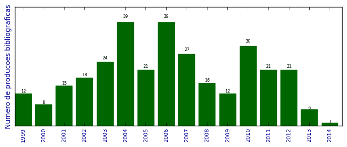

UFSM - Análise do Lattes
Total de produção bibliográfica

Número total de itens: 310
2014
| 1. | COELHO, H. ; COSTA, A. C. R. ; TRIGO, P.. On Agent Interactions Governed by Morality. Em: Diana Adamatti; Graçaliz Dimuro; Helder Coelho. (Org.). On Agent Interactions Governed by Morality. 1ed.Hershey. : IGI Global. 2014.v. 1, p. 1-16. [ citações Google Scholar | citações Microsoft Acadêmico | busca Google ] |
2013
| 1. | COSTA, A. C. R.. On the Basic Binding Structure of a Basic Interaction Scheme. Em: 27th European Conference on Modelling and Simulation, v. 1, p. 907-913, 2013. [ citações Google Scholar | citações Microsoft Acadêmico | busca Google ] Qualis: Não identificado (27th European Conference on Modelling and Simulation) |
| 2. | COSTA, A. C. R.. Toward a Formal Reconstruction of Kelsen s Theory of Legal Systems. Em: II Workshop-Escola de Informática Teórica - WEIT 2013, v. 1, p. 1-8, 2013. [ citações Google Scholar | citações Microsoft Acadêmico | busca Google ] Qualis: Não identificado (II Workshop-Escola de Informática Teórica - WEIT 2013) |
| 3. | DOBRZANSKI, T. ; ALVES, G. V. ; COSTA, A. C. R.. Utilizando o MOISE+ na Modelagem de um Sistema Multiagente da Peça Auto da Compadecida. Em: ENIAC 2013 X National Meeting on Artificial and Computational Intelligence, v. 1, p. 1-12, 2013. [ citações Google Scholar | citações Microsoft Acadêmico | busca Google ] Qualis: Não identificado (ENIAC 2013 X National Meeting on Artificial and Computational Intelligence) |
| 4. | OKUYAMA, Fabio Yoshimitsu ; BORDINI, Rafael Heitor ; COSTA, A. C. R.. Situated Normative Infra-structures: The Normative Object Approach. Journal of Logic and Computation (Print). v. 23, p. 397-424, 2013. [ citações Google Scholar | citações Microsoft Acadêmico | busca Google ] Qualis: B1 |
| 5. | RODRIGUES, T. F. ; COSTA, A. C. R. ; DIMURO, Graçaliz Pereira. A Communication Infrastructure Based on Artifacts for the JaCaMo Platform. Em: 1st International Workshop on Engineering Multiagent Systems @ AAMAS 2013, v. 1, p. 97-111, 2013. [ citações Google Scholar | citações Microsoft Acadêmico | busca Google ] Qualis: Não identificado (1st International Workshop on Engineering Multiagent Systems @ AAMAS 2013) |
| 6. | THOMASI, C. D. ; COSTA, A. C. R.. OrIAs: An Artifact-Based Micro-Organizational Level Infrastruture for Multiagent Systems. Em: 11th European Workshop on Multi-Agent Systems, v. 1, p. 1-14, 2013. [ citações Google Scholar | citações Microsoft Acadêmico | busca Google ] Qualis: B3 (European Workshop on Multi Agent Systems) |
2012
| 1. | COSTA, A. C. R.. The Cultural Level in Agent Societies. Em: Gustavo A. Gimenez Lugo; Jomi F. Hübner; Cesar A. Tacla. (Org.). 2011 Workshop and School of Agent Systems, their Environment and Applications (WESAAC). 1ed.Los Alamitos. : IEEE CPS. 2012.v. 1, p. 1-19. [ citações Google Scholar | citações Microsoft Acadêmico | busca Google ] |
| 2. | COSTA, A. C. R.. Relativismo Epist emico em Sociedades de Agentes: Uma Modelagem Semântica Preliminar. Em: Workshop-Escola de Informática Teórica - WEIT 2011, v. 1, p. 122-133, 2012. [ citações Google Scholar | citações Microsoft Acadêmico | busca Google ] Qualis: Não identificado (Workshop-Escola de Informática Teórica - WEIT 2011) |
| 3. | COSTA, A. C. R.. Functional rights and duties at the micro and macro social levels. 2012. Apresentação de Trabalho/Conferência ou palestra |
| 4. | COSTA, A. C. R. ; DIMURO, Graçaliz Pereira. Elementary Social Functions: Concept and Interrelation to Social Dependence Relations. Em: Graçaliz Pereira Dimuro; Diana Francisca Adamatti; Helder Coelho; Jaime Simão Sichman; João Balsa; Patrícia Tedesco; Antônio Carlos da Rocha Costa. (Org.). 2012 Third Brazilian Workshop on Social Simulation (BWSS). 1ed.Los Alamitos. : IEEE CPS. 2012.v. 1, p. 23-30. [ citações Google Scholar | citações Microsoft Acadêmico | busca Google ] |
| 5. | COSTA, A. C. R. ; DIMURO, Graçaliz Pereira. Elementary Social Functions: Concept and Interrelation to Social Dependence Relations. Em: BWSS 2012 - The Third Brazilian Workshop on Social Simulation, v. 1, p. 1-16, 2012. [ citações Google Scholar | citações Microsoft Acadêmico | busca Google ] Qualis: B5 (Brazilian Workshop on Social Simulation) |
| 6. | COSTA, A. C. R. ; SANTOS, I. A. S.. Toward a Framework for Simulating Agent-Based Models of Public Policy Processes on the Jason-CArtAgO Platform. Em: AMPLE@ECAI 2012 - 2nd International Workshop on Agent-based Modeling for Policy Engineering, v. 1, p. 1-15, 2012. [ citações Google Scholar | citações Microsoft Acadêmico | busca Google ] Qualis: Não identificado (AMPLE@ECAI 2012 - 2nd International Workshop on Agent-based Modeling for Policy Engineering) |
| 7. | DIMURO, G. P. (Org.) ; ADAMATTI, D. F. (Org.) ; COELHO, H. (Org.) ; SICHMAN, J. S. (Org.) ; BALSA, J. (Org.) ; TEDESCO, P. (Org.) ; COSTA, A. C. R. (Org.). 2012 Third Brazilian Workshop on Social Simulation (BWSS). 1 ed. 2012. v. 1. 142p , . [ citações Google Scholar | citações Microsoft Acadêmico | busca Google ] |
| 8. | DIMURO, Graçaliz Pereira ; COSTA, A. C. R.. Regulation of Social Exchanges in Open MAS: the problem of reciprocal conversions between POMDPs and HMMs. Em: Workshop on Adaptive and Learning Agents - ALA 2012 / AAMAS 2012 -11th International Conference on Autonomous Agents and Multiagent Systems, v. 1, p. 1-8, 2012. [ citações Google Scholar | citações Microsoft Acadêmico | busca Google ] Qualis: Não identificado (Workshop on Adaptive and Learning Agents - ALA 2012 / AAMAS 2012 -11th International Conference on Autonomous Agents and Multiagent Systems) |
| 9. | Farias, G. P. ; DIMURO, Graçaliz Pereira ; COSTA, A. C. R.. Um Modelo de Agente BDI-Fuzzy para Trocas de Serviços Não-Econômicos Baseado na Teoria das Trocas Sociais de Piaget. Em: II CBSF - Segundo Congresso Brasileiro de Sistemas Fuzzy, v. 1, p. 1-12, 2012. [ citações Google Scholar | citações Microsoft Acadêmico | busca Google ] Qualis: Não identificado (II CBSF - Segundo Congresso Brasileiro de Sistemas Fuzzy) |
| 10. | GONCALVES, G. ; KRUSCHE, N. ; COSTA, A. C. R.. A Utilização de Sistemas Multiagentes para a Modelagem de Mudanças Climáticas. Em: XVII Congresso Brasileiro de Meteorologia, v. 5, p. 1-6, 2012. [ citações Google Scholar | citações Microsoft Acadêmico | busca Google ] Qualis: Não identificado (XVII Congresso Brasileiro de Meteorologia) |
| 11. | MACEDO, L. F. ; DIMURO, Graçaliz Pereira ; AGUIAR, Marilton Sanchotene de ; COSTA, A. C. R. ; COELHO, H. M. F. ; MATTOS, V.. Analyzing the Evolution of Social Exchange Strategies in Social Preference-based MAS through an Evolutionary Spatial Approach of the Ultimatum Game. Em: BWSS 2012 - The Third Brazilian Workshop on Social Simulation, v. 1, p. 1-16, 2012. [ citações Google Scholar | citações Microsoft Acadêmico | busca Google ] Qualis: B5 (Brazilian Workshop on Social Simulation) |
| 12. | MACEDO, L. F. K. ; DIMURO, Graçaliz Pereira ; AGUIAR, Marilton Sanchotene de ; COSTA, A. C. R. ; MATTOS, V. ; COELHO, H.. Analyzing the Evolution of Social Exchange Strategies in Social Preference-Based MAS through an Evolutionary Spatial Approach of the Ultimatum Game. Em: Graçaliz Pereira Dimuro; Diana Francisca Adamatti; Helder Coelho; Jaime Simão Sichma; João Balsa; Patrícia Tedesco; Antônio Carlos da Rocha Costa. (Org.). 2012 Brazilian Workshop on Social Simulation, Advances in Social Simulation II. 1ed.Los Alamitos. : IEEE CPS. 2012.v. 1, p. 83-90. [ citações Google Scholar | citações Microsoft Acadêmico | busca Google ] |
| 13. | Rodrigues, L. M. ; DIMURO, Graçaliz Pereira ; COSTA, A. C. R. ; EMMENDORFER, L.. A Multiagent System-Based Solution for Shipment Operations with Priorities in a Container Terminal. Em: Gustavo Lugo; Jomi Hübner. (Org.). Post-Procedings of the 2011 Workshop and School of Agent Systems, their Environment and Applications (WESAAC). 1ed.New York. : IEEE. 2012.v. 1, p. 28-36. [ citações Google Scholar | citações Microsoft Acadêmico | busca Google ] |
| 14. | SANTOS, F. P. ; DIMURO, G. ; RODRIGUES, T. F. ; Adamatti, D. ; DIMURO, Graçaliz Pereira ; MANUEL, E. ; COSTA, A. C. R.. Modelando a Organização Social de um SMA para Simulação dos Processos de Produção e Gestão Social de um Ecossistema Urbano: o caso da Horta San Jerónimo da cidade de Sevilla, Espanha. Em: WESAAC 2012 - VI Workshop-Escola de Sistemas de Agentes, v. 1, p. 93-104, 2012. [ citações Google Scholar | citações Microsoft Acadêmico | busca Google ] Qualis: Não identificado (WESAAC 2012 - VI Workshop-Escola de Sistemas de Agentes) |
| 15. | SANTOS, F. P. ; RODRIGUES, T. F. ; Adamatti, D. ; DIMURO, Graçaliz Pereira ; COSTA, A. C. R. ; DIMURO, G. ; MANUEL, E.. Modeling Role Interactions in a Social Organization for the Simulation of the Social Production and Management of Urban Ecosystems: The Case of San Jerónimo Vegetable Garden of Seville, Spain. Em: Graçaliz Pereira Dimuro; Diana Francisca Adamatti; Helder Coelho; Jaime Simão Sichman; João Balsa; Patrícia Tedesco; Antônio Carlos da Rocha Costa. (Org.). 2012 Brazilian Workshop on Social Simulation, Advances in Social Simulation II. 1ed.Los Alamitos. : IEEE CPS. 2012.v. 1, p. 136-139. [ citações Google Scholar | citações Microsoft Acadêmico | busca Google ] |
| 16. | SANTOS, F. P. ; RODRIGUES, T. F. ; DIMURO, G. ; Adamatti, D. ; DIMURO, Graçaliz Pereira ; COSTA, A. C. R. ; MANUEL, E.. Modeling Role Interactions in a Social Organization for the Simulation of the Social Production and Management of Urban Ecosystems: the case of San Jerónimo Vegetable Garden of Seville, Spain. Em: BWSS 2012 - The Third Brazilian Workshop on Social Simulation, v. 1, p. 1-16, 2012. [ citações Google Scholar | citações Microsoft Acadêmico | busca Google ] Qualis: B5 (Brazilian Workshop on Social Simulation) |
| 17. | SANTOS, I. A. S. ; COSTA, A. C. R.. Simulando a Execução de Políticas Públicas através de Jason e CArtAgO. Em: WESAAC 2012 - Workshop-Escola de Sistemas de Agentes, v. 1, p. 81-92, 2012. [ citações Google Scholar | citações Microsoft Acadêmico | busca Google ] Qualis: Não identificado (WESAAC 2012 - Workshop-Escola de Sistemas de Agentes) |
| 18. | SANTOS, I. A. S. ; MOTA, F. P. ; COSTA, A. C. R. ; DIMURO, Graçaliz Pereira. Um framework para simulação de Políticas Públicas aplicado ao caso da Piracema, sob o olhar da Teoria dos Jogos. Em: Encontro Nacional de Inteligência Artificial - ENIA 2012, v. 1, p. 1-12, 2012. [ citações Google Scholar | citações Microsoft Acadêmico | busca Google ] Qualis: B4 (Encontro Nacional de Intelig) |
| 19. | SANTOS, I. A. S. ; RODRIGUES, T. F. ; DIMURO, Graçaliz Pereira ; COSTA, A. C. R. ; DIMURO, G. ; MANUEL, E.. Towards the Modeling of the Social Organization of an Experiment of Social Management of Urban Vegetable Gardens. Em: Gustavo A. Giménez Lugo; Jomi F. Hübner; Cesar A. Tacla. (Org.). 2011 Workshop and School of Agent Systems, their Environment and Applications (WESAAC). 1ed.Los Alamitos. : IEEE CPS. 2012.v. 1, p. 98-101. [ citações Google Scholar | citações Microsoft Acadêmico | busca Google ] |
| 20. | SICHMAN, J. S. ; COSTA, A. C. R. ; Adamatti, D. ; DIMURO, Graçaliz Pereira ; LIMA NETO, F. B. ; BOMMEL, P.. An Overview of Social Simulation Research in Brazil. Em: Graçaliz Pereira Dimuro; Diana Francisca Adamatti; Helder Coelho; Jaime Simão Sichman; João Balsa; Patrícia Tedesco; Antônio Carlos da Rocha Costa. (Org.). 2012 Brazilian Workshop on Social Simulation Advances in Social Simulation II. 1ed.Los Alamitos. : IEEE CPS. 2012.v. 1, p. 18-22. [ citações Google Scholar | citações Microsoft Acadêmico | busca Google ] |
| 21. | VEBER, D. L. ; COSTA, A. C. R. ; KRUSCHE, N.. Net Logo and the Climate Change Model as a Tool for the Simulation of the Greenhouse Effect. Em: Gustavo A. Giménez Lugo; Jomi F. Hübner; Cesar A. Tacla. (Org.). 2011 Workshop and School of Agent Systems, their Environment and Applications (WESAAC). 1ed.Los Alamitos. : IEEE CPS. 2012.v. 1, p. 104-106. [ citações Google Scholar | citações Microsoft Acadêmico | busca Google ] |
2011
| 1. | BARBOSA, R. M. ; COSTA, A. C. R.. Usando CSP, RSL e o Modelo PopOrg na Especificação Formal de Organizações de SMAs. Revista de Informática Teórica e Aplicada (Impresso). v. 17, p. 389-411, 2011. [ citações Google Scholar | citações Microsoft Acadêmico | busca Google ] Qualis: B4 |
| 2. | BRIAO, S. ; DIMURO, Graçaliz Pereira ; COSTA, A. C. R.. Um Estudo para uma Proposta de Modelos de Tomada de Decisão em Interações Estratégicas para Sistemas Multiagentes em Ambientes de Informação Imperfeita. Em: WEIT 2011 - Workshop-Escola de Informática Teórica, v. 1, p. 190-200, 2011. [ citações Google Scholar | citações Microsoft Acadêmico | busca Google ] Qualis: Não identificado (WEIT 2011 - Workshop-Escola de Informática Teórica) |
| 3. | COELHO, H. ; TRIGO, P. ; COSTA, A. C. R.. On the Operationality of Moral-Sense Decision Making. Em: G.P. Dimuro; A.C.R. Costa; J. Sichman; P. Tedesco; D. Adamati; J. Balsa; L. Antunes. (Org.). Advances in Social Simulation, Post-Proceedings of the Brazilian Workshop on Social Simulation. 1ed.Los Alamitos. : IEEE. 2011.v. 1, p. 15-20. [ citações Google Scholar | citações Microsoft Acadêmico | busca Google ] |
| 4. | COSTA, A. C. R.. The Cultural Level of Agent Societies. Em: Gustavo Lugo; Jomi Hubner. (Org.). Post-Procedings of the 2011 Workshop and School of Agent Systems, their Environment and Applications (WESAAC). 1ed.New York. : IEEE. 2011.v. 1, p. 1-19. [ citações Google Scholar | citações Microsoft Acadêmico | busca Google ] |
| 5. | COSTA, A. C. R.. Modelos de Computação: Uma Abordagem Sistêmica. 2011. Apresentação de Trabalho/Conferência ou palestra |
| 6. | COSTA, A. C. R.. O Nível Cultural das Sociedades de Agentes. 2011. Apresentação de Trabalho/Conferência ou palestra |
| 7. | COSTA, A. C. R. ; DIMURO, Graçaliz Pereira. An Interactional Characterization of Social Functions. Em: G.P. Dimuro; A.C.R. Costa; J. Sichman; P. Tedesco; D. Adamati; J. Balsa; L. Antunes. (Org.). Advances in Social Simulation, Post-Proceedings of the Brazilian Workshop on Social Simulation. 1ed.Los Alamitos. : IEEE. 2011.v. 1, p. 74-81. [ citações Google Scholar | citações Microsoft Acadêmico | busca Google ] |
| 8. | COSTA, A. C. R. ; JEANNES, F. M. ; CAVA, U. A.. Equation-Based Models as Formal Specifications of Agent-Based Models for Social Simulation: Preliminary Issues. Em: G.P. Dimuro; A.C.R. Costa; J. Sichman; P. Tedesco; D. Adamati; J. Balsa; L. Antunes. (Org.). Advances in Social Simulation, Post-Proceedings of the Brazilian Workshop on Social Simulation. 1ed.Los Alamitos. : IEEE. 2011.v. 1, p. 119-126. [ citações Google Scholar | citações Microsoft Acadêmico | busca Google ] |
| 9. | COSTA, S. A. (Org.) ; FOSS, L. (Org.) ; AGUIAR, Marilton Sanchotene de (Org.) ; DIMURO, Graçaliz Pereira (Org.) ; COSTA, A. C. R. (Org.). Post-Proceedings 2011 Workshop-School on Theoretical Computer Science - WEIT 2011. 1 ed. 2011. v. 1. 163p , . [ citações Google Scholar | citações Microsoft Acadêmico | busca Google ] |
| 10. | COSTA, S. A. ; COSTA, A. C. R. ; DIMURO, Graçaliz Pereira. Towards Developmental Turing Machines. Em: WEIT 2011 - Workshop-Escola de Informática Teórica, v. 1, p. 152-163, 2011. [ citações Google Scholar | citações Microsoft Acadêmico | busca Google ] Qualis: Não identificado (WEIT 2011 - Workshop-Escola de Informática Teórica) |
| 11. | DIMURO, Graçaliz Pereira (Org.) ; COSTA, A. C. R. (Org.) ; SICHMAN, J. S. (Org.) ; TEDESCO, P. (Org.) ; Adamatti, D. (Org.) ; BALSA, J. (Org.) ; Antunes, L. (Org.). Advances in Social Simulation, Post-Proceedings of the Brazilian Workshop on Social Simulation. 1 ed. 2011. v. 1. 132p , . [ citações Google Scholar | citações Microsoft Acadêmico | busca Google ] |
| 12. | DIMURO, Graçaliz Pereira (Org.) ; FOSS, L. (Org.) ; AGUIAR, Marilton Sanchotene de (Org.) ; COSTA, S. A. (Org.) ; COSTA, A. C. R. (Org.). Anais do WEIT 2011 - I Workshop-Escola de Informática Teórica. 1 ed. 2011. v. 1. 267p , . [ citações Google Scholar | citações Microsoft Acadêmico | busca Google ] |
| 13. | DIMURO, Graçaliz Pereira ; COSTA, A. C. R. ; Gonçalves, L. V.. On the Problem of Recognizing and Learning Observable Social Exchange Strategies in Open Societies. Em: G.P. Dimuro; A.C.R. Costa; J. Sichman; P. Tedesco; D. Adamati; J. Balsa; L. Antunes.. (Org.). Advances in Social Simulation, Post-Proceedings of the Brazilian Workshop on Social Simulation. 1ed.Los Alamitos. : IEEE. 2011.v. 1, p. 66-73. [ citações Google Scholar | citações Microsoft Acadêmico | busca Google ] |
| 14. | DIMURO, Graçaliz Pereira ; COSTA, A. C. R. ; Gonçalves, L. V. ; Pereira, D. R.. Recognizing and learning models of social exchange strategies for the regulation of social interactions in open agent societies. Journal of the Brazilian Computer Society (Impresso). v. 17, p. 1-19, 2011. [ citações Google Scholar | citações Microsoft Acadêmico | busca Google ] Qualis: B2 |
| 15. | FRANCO, M. H. I. ; COSTA, A. C. R. ; COELHO, H.. Simulating Argumentation about Exchange Values in Multi-agent Interactions. Em: G.P. Dimuro; A.C.R. Costa; J. Sichman; P. Tedesco; D. Adamati; J. Balsa; L. Antunes. (Org.). Advances in Social Simulation, Post-Proceedings of the Brazilian Workshop on Social Simulation. 1ed.Los Alamitos. : IEEE. 2011.v. 1, p. 103-110. [ citações Google Scholar | citações Microsoft Acadêmico | busca Google ] |
| 16. | Pereira, D. R. ; Gonçalves, L. V. ; DIMURO, Graçaliz Pereira ; COSTA, A. C. R.. An Analysis of Two Regulation Mechanisms for Personality-Based Social Exchange Processes. Em: G.P. Dimuro; A.C.R. Costa; J. Sichman; P. Tedesco; D. Adamati; J. Balsa; L. Antunes. (Org.). Advances in Social Simulation, Post-Proceedings of the Brazilian Workshop on Social Simulation. 1ed.Los Alamitos. : IEEE. 2011.v. 1, p. 96-102. [ citações Google Scholar | citações Microsoft Acadêmico | busca Google ] |
| 17. | Rodrigues, L. M. ; DIMURO, Graçaliz Pereira ; COSTA, A. C. R.. Um Modelo Multiagente para Carregamento Compartilhado com Prioridades em um Terminal de Contêineres: Combinando o Problema da Mochila com PDMs. Em: V Workshop-Escola de Sistemas de Agentes, v. 1, p. 51-62, 2011. [ citações Google Scholar | citações Microsoft Acadêmico | busca Google ] Qualis: Não identificado (V Workshop-Escola de Sistemas de Agentes) |
| 18. | Rodrigues, L. M. ; DIMURO, Graçaliz Pereira ; COSTA, A. C. R. ; EMMENDORFER, L.. A Multiagent System-Based Solution for Shipment Operations with Priorities in a Container Terminal. Em: Gustavo A. Giménez Lugo;Jomi F. Hübner;Cesar A. Tacla. (Org.). A Multiagent System-Based Solution for Shipment Operations with Priorities in a Container Terminal. 1ed.Los Alamitos. : IEEE CPS. 2011.v. 1, p. 28-36. [ citações Google Scholar | citações Microsoft Acadêmico | busca Google ] |
| 19. | Rodrigues, L. M. ; DIMURO, Graçaliz Pereira ; COSTA, A. C. R. ; EMMENDORFER, L.. Um Modelo Multiagente para Carregamento Compartilhado com Prioridades em um Terminal de Conêineres: Combinando o Problema da Mochila com PDMs. Em: V Workshop-Escola de Sistemas de Agentes, v. 1, p. 51-62, 2011. [ citações Google Scholar | citações Microsoft Acadêmico | busca Google ] Qualis: Não identificado (V Workshop-Escola de Sistemas de Agentes) |
| 20. | RODRIGUES, T. F. ; SANTOS, I. A. S. ; DIMURO, G. ; COSTA, A. C. R. ; DIMURO, Graçaliz Pereira. Modelando a Organização Social de um Experimento de Gestão Social de Hortas Urbanas. Em: V Workshop-Escola de Sistemas de Agentes, seus Ambientes e Aplicações, 2011, Curitiba. Anais do WESAAC 2011. Curitiba: UTFPR, v. 1, p. 163-166, 2011. [ citações Google Scholar | citações Microsoft Acadêmico | busca Google ] Qualis: Não identificado (V Workshop-Escola de Sistemas de Agentes, seus Ambientes e Aplicações, 2011, Curitiba. Anais do WESAAC 2011. Curitiba: UTFPR) |
| 21. | SANTOS, I. A. S. ; RODRIGUES, T. F. ; DIMURO, Graçaliz Pereira ; COSTA, A. C. R. ; DIMURO, G. ; MANUEL, E.. Towards the Modeling of the Social Organization of an Experiment of Social Management of Urban Vegetable Gardens. Em: Gustavo Lugo; Jomi Hübner.. (Org.). Post-Procedings of the 2011 Workshop and School of Agent Systems, their Environment and Applications (WESAAC). 1ed.New York. : IEEE. 2011.v. 1, p. 98-101. [ citações Google Scholar | citações Microsoft Acadêmico | busca Google ] |
2010
| 1. | BARBOSA, R. M. ; COSTA, A. C. R.. Using CSP in the Formal Specification of the Micro-organizational level of Multiagent Systems. Em: R. Trappl. (Org.). Cybernetics and Systems 2010 (Track: From Agent Theory to Agent Implementation AT2AI-7). 1ed.Vienna. : OFAI. 2010.v. 1, p. 459-464. [ citações Google Scholar | citações Microsoft Acadêmico | busca Google ] |
| 2. | BARBOSA, R. M. ; COSTA, A. C. R.. Uso de CSP na Especificação Formal do Nível Micro-Organizacional de Sistemas Multiagentes. Em: WESAAC 2010: Workshop-Escola de Sistemas de Agentes, v. 1, p. 13-21, 2010. [ citações Google Scholar | citações Microsoft Acadêmico | busca Google ] Qualis: Não identificado (WESAAC 2010: Workshop-Escola de Sistemas de Agentes) |
| 3. | BARBOSA, R. M. ; COSTA, A. C. R. ; TEDESCO, P. ; Mota, A.. Uso de CSP na Especificação Formal do Nível Micro-Organizacional de SMAs. Workshop-Escola de Sistemas de Agentes, seus Ambientes e apliCações - Artigos Selecionados das quatro primeiras edições. Rio Grande. Em: . : Edigraf- Editora e Gráfica da Universidade Federal do Rio Grande. 2010.v. 1, p. 86-94. [ citações Google Scholar | citações Microsoft Acadêmico | busca Google ] |
| 4. | COELHO, H. ; COSTA, A. C. R. ; TRIGO, P.. On the Operationality of Moral-Sense Decision Making. Em: Second Brazilian Workshop on Social Simulation (BWSS 2010) at Joint Conferences XX SBIA/XI SBRN/IV JRI, v. 1, p. 11-22, 2010. [ citações Google Scholar | citações Microsoft Acadêmico | busca Google ] Qualis: B5 (Brazilian Workshop on Social Simulation) |
| 5. | COELHO, H. ; COSTA, A. C. R. ; TRIGO, P.. Moral Minds as Multiple-Layer Organizations. Em: 12th Ibero-American Conference on AI, v. 6433, p. 254-263, 2010.  [ citações Google Scholar | citações Microsoft Acadêmico | busca Google ] Qualis: Não identificado (12th Ibero-American Conference on AI) |
| 6. | COELHO, H. ; COSTA, A. C. R. ; TRIGO, P.. Decision Making for Agent Moral Conducts. Em: INFORUM - Simpósio de Informática, v. 1, p. 1-12, 2010. [ citações Google Scholar | citações Microsoft Acadêmico | busca Google ] Qualis: Não identificado (INFORUM - Simpósio de Informática) |
| 7. | COSTA, A. C. R. (Org.) ; Vicari, R. M. (Org.) ; Tonidandel, F. (Org.). Advance in Artificial Intelligence - SBIA 2010. 1 ed. 2010. v. 1. 313p , . [ citações Google Scholar | citações Microsoft Acadêmico | busca Google ] |
| 8. | COSTA, A. C. R. ; DIMURO, Graçaliz Pereira. An Interactional Characterization of Social Functions. Em: Second Brazilian Workshop on Social Simulation - BWSS 2010 at Joint Conference SBIA/SBRN/JRI 2010, v. 1, p. 105-117, 2010. [ citações Google Scholar | citações Microsoft Acadêmico | busca Google ] Qualis: B5 (Brazilian Workshop on Social Simulation) |
| 9. | DIMURO, Graçaliz Pereira ; COSTA, A. C. R. ; Gonçalves, L. V.. On the Problem of Recognizing and Learning Observable Social Exchange Strategies in Open Societies. Em: Second Brazilian Workshop on Social Simulation (BWSS 2010) at Joint Conferences XX SBIA/XI SBRN/IV JRI, v. 1, p. 140-152, 2010. [ citações Google Scholar | citações Microsoft Acadêmico | busca Google ] Qualis: B5 (Brazilian Workshop on Social Simulation) |
| 10. | DIMURO, Graçaliz Pereira ; COSTA, A. C. R. ; MUSSI, R. L.. Sobre Números Fuzzy Intervalares. Em: Congresso Brasileiro de Sistemas Fuzzy, v. 1, p. 162-169, 2010. [ citações Google Scholar | citações Microsoft Acadêmico | busca Google ] Qualis: Não identificado (Congresso Brasileiro de Sistemas Fuzzy) |
| 11. | Farias, G. P. ; DIMURO, Graçaliz Pereira ; COSTA, A. C. R.. Aplicação de Agentes BDI com Percepção Fuzzy no Modelo Presa-Predador. Revista de Informática Teórica e Aplicada (Impresso). v. 7, p. 299-324, 2010. [ citações Google Scholar | citações Microsoft Acadêmico | busca Google ] Qualis: B4 |
| 12. | Farias, G. P. ; DIMURO, Graçaliz Pereira ; COSTA, A. C. R.. Agentes BDI com Percepção Fuzzy na Simulação de um Modelo Presa-Predador Fuzzy. Em: D. F. Adamatti. (Org.). Workshop-Escola de Sistemas de Agentes, seus Ambientes e apliCações - Artigos Selecionados das quatro primeiras edições. Rio Grande. : Edigraf- Editora e Gráfica da Universidade Federal do Rio Grande. 2010.v. 1, p. 74-85. [ citações Google Scholar | citações Microsoft Acadêmico | busca Google ] |
| 13. | Farias, G. P. ; DIMURO, Graçaliz Pereira ; COSTA, A. C. R.. Analisando Trocas Sociais Baseadas em Personalidades Através de Cadeias de Markov Intervalares. Em: D. F. Adamatti. (Org.). Analisando Trocas Sociais Baseadas em Personalidades Através de Cadeias de Markov Intervalares. Rio Grande. : Edigraf- Editora e Gráfica da Universidade Federal do Rio Grande. 2010.v. 1, p. 13-23. [ citações Google Scholar | citações Microsoft Acadêmico | busca Google ] |
| 14. | Farias, G. P. ; DIMURO, Graçaliz Pereira ; COSTA, A. C. R.. Agentes BDI com Percepção Fuzzy na Simulação de um Modelo Presa-Predador Fuzzy. Em: WESAAC 2010: Workshop-Escola de Sistemas de Agentes, v. 1, p. 1-12, 2010. [ citações Google Scholar | citações Microsoft Acadêmico | busca Google ] Qualis: Não identificado (WESAAC 2010: Workshop-Escola de Sistemas de Agentes) |
| 15. | Farias, G. P. ; DIMURO, Graçaliz Pereira ; COSTA, A. C. R.. BDI Agents with Fuzzy Perception for Simulating Decision Making in Environments with Imperfect Information. Em: The Multi-Agent Logics, v. 627, p. 41/23-41/30, 2010. [ citações Google Scholar | citações Microsoft Acadêmico | busca Google ] Qualis: Não identificado (The Multi-Agent Logics) |
| 16. | Farias, G. P. ; DIMURO, Graçaliz Pereira ; COSTA, A. C. R.. BDI Agents with Fuzzy Perception. Em: V Workshop on MSc Dissertation and PhD Thesis in Artificial Intelligence, v. 1, p. 742-751, 2010. [ citações Google Scholar | citações Microsoft Acadêmico | busca Google ] Qualis: Não identificado (V Workshop on MSc Dissertation and PhD Thesis in Artificial Intelligence) |
| 17. | Farias, G. P. ; DIMURO, Graçaliz Pereira ; COSTA, A. C. R.. Um Modelo Híbrido de Agente BDI-Fuzzy. Em: WESAAC 2010: Workshop-Escola de Sistemas de Agentes, seus Ambientes e Aplicações, 2010, Rio Grande. Anais do WESAAC 2010. Rio Grande: FURG, v. 1, p. 147-150, 2010. [ citações Google Scholar | citações Microsoft Acadêmico | busca Google ] |
| 18. | FRANCO, M. H. I. ; COSTA, A. C. R. ; COELHO, H.. Exchange Values and Social Power Supporting the Choice of Partners. Revista Pueblos y Frontera Digital. v. 6, p. art_02, 2010. [ citações Google Scholar | citações Microsoft Acadêmico | busca Google ] Qualis: C |
| 19. | Gonçalves, L. V. ; DIMURO, Graçaliz Pereira ; COSTA, A. C. R.. Uma arquitetura de Agentes BDI Híbridos para Auto-regulação de Trocas Sociais em Sistemas Multiagentes Abertos. Em: D.F. Adamatti. (Org.). Workshop-Escola de Sistemas de Agentes, seus Ambientes e apliCações - Artigos Selecionados das quatro primeiras edições. 73ed.Rio Grande. : Edigraf- Editora e Gráfica da Universidade Federal do Rio Grande. 2010.v. 1, p. -60. [ citações Google Scholar | citações Microsoft Acadêmico | busca Google ] |
| 20. | Hübner, A. ; COSTA, A. C. R. ; DIMURO, Graçaliz Pereira. Extending the MOISE+ Organizational Model with the Dialogic Dimension. Em: Botelho, S. S. C., Adamatti, D. and Rocha, L. A. O.. (Org.). Third Southern Conference on Computational Modeling (MCSUL), 2009 (Post-Proceedings, Revised Selected Papers). Los Alamitos. : IEEE. 2010.v. 1, p. 130-135. [ citações Google Scholar | citações Microsoft Acadêmico | busca Google ] |
| 21. | Hübner, A. ; COSTA, A. C. R. ; DIMURO, Graçaliz Pereira ; MATTOS, V. ; HERNANDES, S.. Introdução da Dimensão Dialógica no Moise+, com Aplicação na Modelagem de Processos de Gestão em uma Universidade Comunitária. Em: D.F. Adamatti. (Org.). Workshop-Escola de Sistemas de Agentes, seus Ambientes e apliCações - Artigos Selecionados das quatro primeiras edições. Rio Grande. : Edigraf- Editora e Gráfica da Universidade Federal do Rio Grande. 2010.v. 1, p. 138-149. [ citações Google Scholar | citações Microsoft Acadêmico | busca Google ] |
| 22. | Hübner, A. ; COSTA, A. C. R. ; DIMURO, Graçaliz Pereira ; MATTOS, V. ; HERNANDES, S. ; MAILANGE, M.. Introdução da Dimensão Dialógica no Moise+, com Aplicação na Modelagem de Processos de Gestão em uma Universidade Comunitária. Em: WESAAC 2010: Workshop-Escola de Sistemas de Agentes, v. 1, p. 65-76, 2010. [ citações Google Scholar | citações Microsoft Acadêmico | busca Google ] Qualis: Não identificado (WESAAC 2010: Workshop-Escola de Sistemas de Agentes) |
| 23. | Hübner, A. ; DIMURO, Graçaliz Pereira ; COSTA, A. C. R. ; MATTOS, V.. A Dialogic Dimension for the MOISE+ Organizational Model. Em: The Multi-Agent Logics, v. 627, p. 23/21-23/26, 2010. [ citações Google Scholar | citações Microsoft Acadêmico | busca Google ] Qualis: Não identificado (The Multi-Agent Logics) |
| 24. | JEANNES, F. M. ; COSTA, A. C. R.. Modelo de Agente Econômico Cognitivo com Base no Conceito de Agentes BDI. Em: D.F. Adamatti. (Org.). Workshop-Escola de Sistemas de Agentes, seus Ambientes e apliCações - Artigos Selecionados das quatro primeiras edições. Rio Grande. : Edigraf- Editora e Gráfica da Universidade Federal do Rio Grande. 2010.v. 1, p. 126-137. [ citações Google Scholar | citações Microsoft Acadêmico | busca Google ] |
| 25. | JEANNES, F. M. ; COSTA, A. C. R.. Um Modelo de Agente Econômico Cognitivo com Base no Conceito de Agentes BDI. Em: WESAAC 2010: Workshop-Escola de Sistemas de Agentes, v. 1, p. 53-64, 2010. [ citações Google Scholar | citações Microsoft Acadêmico | busca Google ] Qualis: Não identificado (WESAAC 2010: Workshop-Escola de Sistemas de Agentes) |
| 26. | Pereira, D. R. ; COSTA, A. C. R.. Teoria dos Jogos aplicada à coordenação de agentes, utilizando Teoria dos Valores de Troca. Em: D.F. Adamatti. (Org.). Workshop-Escola de Sistemas de Agentes, seus Ambientes e apliCações - Artigos Selecionados das quatro primeiras edições. Rio Grande. : Edigraf- Editora e Gráfica da Universidade Federal do Rio Grande. 2010.v. 1, p. 150-161. [ citações Google Scholar | citações Microsoft Acadêmico | busca Google ] |
| 27. | Pereira, D. R. ; COSTA, A. C. R.. Teoria dos Jogos aplicada à coordenação de agentes, utilizando Teoria dos Valores de Troca. Em: WESAAC 2010: Workshop-Escola de Sistemas Multiagentes, v. 1, p. 77-88, 2010. [ citações Google Scholar | citações Microsoft Acadêmico | busca Google ] Qualis: Não identificado (WESAAC 2010: Workshop-Escola de Sistemas Multiagentes) |
| 28. | RODRIGUES, T. F. ; DIMURO, G. ; VON GROL, C. ; PINHEIRO, T. V. ; DIMURO, Graçaliz Pereira ; COSTA, A. C. R.. Simulação Baseada em Agentes de Processos de Gestão Social de Ecossistemas Urbanos: o caso das hortas urbanas da cidade de Sevilla. Em: 4th Southern Conference on Computational Modeling/IX Encontro Regional de Matemática Aplicada e Computacional, 2010, Rio Grande. Anais do 4MCSUL/IX ERMAC. Rio Grande: FURG, v. 1, p. 257-260, 2010. [ citações Google Scholar | citações Microsoft Acadêmico | busca Google ] Qualis: Não identificado (4th Southern Conference on Computational Modeling/IX Encontro Regional de Matemática Aplicada e Computacional, 2010, Rio Grande. Anais do 4MCSUL/IX ERMAC. Rio Grande: FURG) |
| 29. | ROSA, S. ; DIMURO, Graçaliz Pereira ; COSTA, A. C. R.. Estendendo o Modelo de Organização de Sistemas Multiagentes PopOrg com Unidades Organizacionais Recursivas. Em: Workshop-Escola de Sistemas de Agentes, seus Ambientes e Aplicações - WESAAC 2010, 2010, Rio Grande. Anais do WESAAC 2010. Rio Grande: FURG, v. 1, p. 143-146, 2010. [ citações Google Scholar | citações Microsoft Acadêmico | busca Google ] Qualis: Não identificado (Workshop-Escola de Sistemas de Agentes, seus Ambientes e Aplicações - WESAAC 2010, 2010, Rio Grande. Anais do WESAAC 2010. Rio Grande: FURG) |
| 30. | SILVA, C. E. ; DIMURO, Graçaliz Pereira ; COSTA, A. C. R.. Especificando Rotinas Organizacionais de Sistemas Multiagentes: Detecção de Desvios com Base no Conceito de Expectativas. Em: WESAAC 2010: Workshop-Escola de Sistemas Multiagentes, seus Ambientes e Aplicações, 2010, Rio Grande. Anais do WESAAC 2010. Rio Grande: FURG, v. 1, p. 139-142, 2010. [ citações Google Scholar | citações Microsoft Acadêmico | busca Google ] |
2009
| 1. | AMARAL, R. B. ; REISER, Renata Hax Sander ; COSTA, A. C. R.. Interpretações do Interferômetro de Mach-Zehnder no Modelo qMG. TEMA. Tendências em Matemática Aplicada e Computacional. v. 10, p. 111-124, 2009. [ citações Google Scholar | citações Microsoft Acadêmico | busca Google ] Qualis: B4 |
| 2. | BERNARDI, Giliane ; COSTA, A. C. R.. Aprendizagem Organizacional através de Simulação baseada em Instituições Eletrônicas e Agentes de Software. Em: V Simpósio Brasileiro de Sistemas de Informação, v. 1, 2009. [ citações Google Scholar | citações Microsoft Acadêmico | busca Google ] Qualis: B4 (Simpósio Brasileiro de Sistemas de Informação) |
| 3. | COELHO, H. ; COSTA, A. C. R.. On the Intelligence of Moral Agency. Em: 14th Portuguese Conference on Artificial Intelligence - EPIA'2009/Social Simulation and Modelling - SSM 2009, v. 1, p. 439-450, 2009. [ citações Google Scholar | citações Microsoft Acadêmico | busca Google ] Qualis: Não identificado (14th Portuguese Conference on Artificial Intelligence - EPIA'2009/Social Simulation and Modelling - SSM 2009) |
| 4. | COSTA, A. C. R. ; DIMURO, Graçaliz Pereira. A Minimal Dynamical MAS Organization Model. Em: Virginia Dignum. (Org.). Multiagent Systems - Semantics and Dynamics of Organization Models. 1ed.Hershey. : IGI Global. 2009.v. 1, p. 419-445. [ citações Google Scholar | citações Microsoft Acadêmico | busca Google ] |
| 5. | COSTA, A. C. R. ; DIMURO, Graçaliz Pereira. Introducing Social Groups and Group Exchanges in the PopOrg Model. Em: The 8th International Conference on Autonomous Agents and Multiagent Systems, 2009, Budapest. Proceedings of AAMAS 2009. Richland: IFAAMAS, v. 1, p. 1297-1298, 2009. [ citações Google Scholar | citações Microsoft Acadêmico | busca Google ] Qualis: Não identificado (The 8th International Conference on Autonomous Agents and Multiagent Systems, 2009, Budapest. Proceedings of AAMAS 2009. Richland: IFAAMAS) |
| 6. | COSTA, A. C. R. ; DIMURO, Graçaliz Pereira ; DUGDALE, J. ; DEMAZEAU, Y.. A Formal Notion of Objective Expectations in the Context of Multiagent Systems Routines. Em: 14th Portuguese Conference on Artificial Intelligence - EPIA'2009/Multi-Agent Systems: Theory and Applications - MASTA 2009, v. 1, p. 367-378, 2009. [ citações Google Scholar | citações Microsoft Acadêmico | busca Google ] Qualis: Não identificado (14th Portuguese Conference on Artificial Intelligence - EPIA'2009/Multi-Agent Systems: Theory and Applications - MASTA 2009) |
| 7. | DIMURO, Graçaliz Pereira ; COSTA, A. C. R.. Toward a Semantical Model of Organization Growth for Multiagent Systems. Em: Computability in Europe 2009: Mathematical Theory and Computational Practice, v. 1, p. 120-129, 2009. [ citações Google Scholar | citações Microsoft Acadêmico | busca Google ] Qualis: Não identificado (Computability in Europe 2009: Mathematical Theory and Computational Practice) |
| 8. | DIMURO, Graçaliz Pereira ; SANTOS, André Vinícius dos ; BEDREGAL, Benjamin René Callejas ; COSTA, A. C. R.. Fuzzy Evaluation of Social Exchanges Between Personality-based Agents. Em: 14th Portuguese Conference on Artificial Intelligence - EPIA'2009/Social Simulation and Modelling - SSM, v. 1, p. 451-462, 2009. [ citações Google Scholar | citações Microsoft Acadêmico | busca Google ] Qualis: Não identificado (14th Portuguese Conference on Artificial Intelligence - EPIA'2009/Social Simulation and Modelling - SSM) |
| 9. | Farias, G. P. ; DIMURO, Graçaliz Pereira ; COSTA, A. C. R.. Um Modelo de Percepção Fuzzy para Agentes BDI. Em: 3rd Southern Conference on Computational Modeling, 2009, Rio Grande. Proceedings of MCSUL 2009. Rio Grande: FURG, v. 1, p. 1-4, 2009. [ citações Google Scholar | citações Microsoft Acadêmico | busca Google ] Qualis: Não identificado (3rd Southern Conference on Computational Modeling, 2009, Rio Grande. Proceedings of MCSUL 2009. Rio Grande: FURG) |
| 10. | Hübner, A. ; COSTA, A. C. R. ; DIMURO, Graçaliz Pereira. Estendendo o Modelo Organizacional MOISE+ com a Dimensão Dialógica. Em: 3rd Southern Conference on Computational Modeling, v. 1, p. 1-6, 2009. [ citações Google Scholar | citações Microsoft Acadêmico | busca Google ] Qualis: Não identificado (3rd Southern Conference on Computational Modeling) |
| 11. | ISLABÃO, Márcia Hafelle ; COSTA, A. C. R.. Simulating Argumentation about Exchange Values in Multi-Agents Interactions. Em: 19th Brazilian Symposium on Artificial Intelligence - Workshop on Social Simulation (SBIA - BWSS 2008), v. 1, p. 1-12, 2009. [ citações Google Scholar | citações Microsoft Acadêmico | busca Google ] Qualis: Não identificado (19th Brazilian Symposium on Artificial Intelligence - Workshop on Social Simulation (SBIA - BWSS 2008)) |
| 12. | JEANNES, F. M. ; COSTA, A. C. R.. A Critical Study of the Coherence between EBMs and ABMs in the Simulation of the Hawks-Doves-LawAbiders Society. Em: 14th Portuguese Conference on Artificial Intelligence - EPIA'2009/Social Simulation and Modelling - SSM 2009, v. 1, p. 475-486, 2009. [ citações Google Scholar | citações Microsoft Acadêmico | busca Google ] Qualis: Não identificado (14th Portuguese Conference on Artificial Intelligence - EPIA'2009/Social Simulation and Modelling - SSM 2009) |
2008
| 1. | AMARAL, R. B. ; REISER, Renata Hax Sander ; COSTA, A. C. R.. Interpretações do Interferômetro de Mach-Zehnder no Modelo qMG. Em: Congresso de Matemática Aplicada e Computacional, v. 1, p. 1-10, 2008. [ citações Google Scholar | citações Microsoft Acadêmico | busca Google ] Qualis: B4 (Congresso Nacional de Matemática Aplicada e Computacional) |
| 2. | BERNARDI, Giliane ; COSTA, A. C. R.. Capacitação de Gestores de Universidades através da Utilização de Jogos de Empresas Baseados em Instituições Eletrônicas. Revista do CCEI. v. 12, p. 53-59, 2008. [ citações Google Scholar | citações Microsoft Acadêmico | busca Google ] Qualis: B5 |
| 3. | BERNARDI, Giliane ; COSTA, A. C. R.. Capacitação de Gestores de Instituições de Ensino Superior através da Simulação de Processos Administrativos utilizando a Abordagem de Instituições Eletrônicas. Em: Workshop-Escola de Sistemas de Agentes para Ambientes Colaborativos, v. 1, p. 1-12, 2008. [ citações Google Scholar | citações Microsoft Acadêmico | busca Google ] Qualis: Não identificado (Workshop-Escola de Sistemas de Agentes para Ambientes Colaborativos) |
| 4. | BERNARDI, Giliane ; COSTA, A. C. R.. Jogos de Empresa e Aprendizagem Organizacional: um Estudo de Caso de Simulação de Processos Organizacionais de uma Instituição de Educação Superior. Em: SEGeT 2008 - V Simpósio de Excelência em Gestão e Tecnologia, v. 1, 2008. [ citações Google Scholar | citações Microsoft Acadêmico | busca Google ] Qualis: Não identificado (SEGeT 2008 - V Simpósio de Excelência em Gestão e Tecnologia) |
| 5. | BERNARDI, Giliane ; COSTA, A. C. R.. Jogo de Empresa baseado em Agentes de Software e Instituições Eletrônicas para Aprendizagem Organizacional de Gestores de Instituições de Educação Superior. Em: Jornadas Chilenas de Computación 2008 - Workshop en Agentes y Sistemas Colaborativos, v. 1, 2008. [ citações Google Scholar | citações Microsoft Acadêmico | busca Google ] Qualis: Não identificado (Jornadas Chilenas de Computación 2008 - Workshop en Agentes y Sistemas Colaborativos) |
| 6. | COSTA, A. C. R. (Org.). Proceedings of BWSS - Brazilian Workshop on Social Simulation. Porto Alegre: SBC. 2008. v. 1, . [ citações Google Scholar | citações Microsoft Acadêmico | busca Google ] |
| 7. | COSTA, A. C. R. ; DIMURO, Graçaliz Pereira. Semantical Concepts for a Formal Structural Dynamics of Situated Multiagent Systems. Em: Sichman, J.; Noriega, P.; Padget, J.; Ossowski, S.. (Org.). Coordination, Organizations, Institutions and Norms in Multi-Agent Systems III. Revised selected papers of COIN Workshops 2007 (lecture Notes in Artificial Intelilgence). Berlin. : Springer-Verlag. 2008.v. 4870, p. 139-154. [ citações Google Scholar | citações Microsoft Acadêmico | busca Google ] |
| 8. | COSTA, A. C. R. ; DIMURO, Graçaliz Pereira. Introducing Service Schemes and Systems Organization in the Theory of Interactive Computation. Em: Fourth Conference on Computability in Europe: Logic and Theory of Algorithms, v. 1, p. 87-96, 2008. [ citações Google Scholar | citações Microsoft Acadêmico | busca Google ] Qualis: Não identificado (Fourth Conference on Computability in Europe: Logic and Theory of Algorithms) |
| 9. | COSTA, A. C. R. ; JEANNES, F. M. ; CAVA, U. A.. Equation based Models as Formal Specifications of Agent-based Models for Social Simulation: preliminary issues. Em: BWSS 2008 - Brazilian Workshop on Social Simulation, v. 1, p. 1-12, 2008. [ citações Google Scholar | citações Microsoft Acadêmico | busca Google ] Qualis: B5 (Brazilian Workshop on Social Simulation) |
| 10. | DIMURO, Graçaliz Pereira ; COSTA, A. C. R. ; Gonçalves, L. V. ; Hübner, A.. Interval-Valued Hidden Markov Models for Recognizing Personality Traits in Social Exchanges in Open Multiagent Systems. TEMA. Tendências em Matemática Aplicada e Computacional. v. 9, p. 83-93, 2008. [ citações Google Scholar | citações Microsoft Acadêmico | busca Google ] Qualis: B4 |
| 11. | OKUYAMA, Fabio Yoshimitsu ; BORDINI, R. H. ; COSTA, A. C. R.. A Distributed Normative Infrastructure for Situated Multi-Agent Organisations. Em: 7th International Joint Conference on Autonomous Agents and Multiagent Systems (AAMAS 2008), 2008, Estoril. Proceedings of AAMAS 2008. Estoril: IFAMAS, v. 3, p. 1501-1504, 2008. [ citações Google Scholar | citações Microsoft Acadêmico | busca Google ] Qualis: Não identificado (7th International Joint Conference on Autonomous Agents and Multiagent Systems (AAMAS 2008), 2008, Estoril. Proceedings of AAMAS 2008. Estoril: IFAMAS) |
| 12. | OKUYAMA, Fabio Yoshimitsu ; BORDINI, Rafael Heitor ; COSTA, A. C. R.. A Distributed Normative Infrastructure for Situated Multi-Agent Organisations. Em: Matteo Baldoni;Tran Cao Son; M. Birna van Riemsdijk;Michael Winikoff. (Org.). Declarative Agent Languages and Technologies VI - DALT 2008 (LNCS 5397). Berlin. : Springer. 2008.v. 1, p. 29-46. [ citações Google Scholar | citações Microsoft Acadêmico | busca Google ] |
| 13. | Pereira, D. R. ; DIMURO, Graçaliz Pereira ; COSTA, A. C. R.. Constructing BDI Plans from Optimal POMDP Policies, with an Application to AgentSpeak Programming. Em: XXXIV Conferência Latinoamericano de Informática, v. 1, p. 240-249, 2008. [ citações Google Scholar | citações Microsoft Acadêmico | busca Google ] Qualis: B4 (Conferencia Latinoamericana de Informática) |
| 14. | Pereira, D. R. ; Gonçalves, L. V. ; DIMURO, Graçaliz Pereira ; COSTA, A. C. R.. Contrasting Two Regulation Mechanisms for Personality-based Social Exchange Processes. Em: 1st Brazilian Workshop on Social Simulation, v. 1, p. 1-12, 2008. [ citações Google Scholar | citações Microsoft Acadêmico | busca Google ] Qualis: B5 (Brazilian Workshop on Social Simulation) |
| 15. | Pereira, D. R. ; Gonçalves, L. V. ; DIMURO, Graçaliz Pereira ; COSTA, A. C. R.. Towards the Self-regulation of Personality-based Social Exchange Processes in Multiagent Systems. Em: 19th Brazilian Symposium on Artificial Intelligence, v. 5249, p. 113-123, 2008. [ citações Google Scholar | citações Microsoft Acadêmico | busca Google ] Qualis: B2 (Brazilian Symposium on Artificial Inteligence) |
| 16. | VIZZOTO, Juliana Kaiser ; COSTA, A. C. R. ; Sabry, A.. Quantum Arrows in Haskell. Electronic Notes in Theoretical Computer Science. v. 210, p. 139-152, 2008. [ citações Google Scholar | citações Microsoft Acadêmico | busca Google ] Qualis: B1 |
2007
| 1. | BEDREGAL, Benjamín Callejas ; DIMURO, Graçaliz Pereira ; COSTA, A. C. R.. Hand Gesture Recognition in an Interval Fuzzy Approach. TEMA. Tendências em Matemática Aplicada e Computacional. v. 8, p. 21-31, 2007. [ citações Google Scholar | citações Microsoft Acadêmico | busca Google ] Qualis: B4 |
| 2. | BEDREGAL, Benjamín Callejas ; DIMURO, Graçaliz Pereira ; COSTA, A. C. R.. Interval Fuzzy Rule-Based Hand Gesture Recognition. Em: W. Luther; W. Otten. (Org.). IEEE Post-Proceedings of SCAN 2006 - Revised Selected Papers of the 12th GAMM - IMACS International Symposion on Scientific Computing, Computer Arithmetic and Validated Numerics. Los Alamitos. : IEEE. 2007.v. 1, p. 1-11. [ citações Google Scholar | citações Microsoft Acadêmico | busca Google ] |
| 3. | COSTA, A. C. R. (Org.). Anais do WESAAC 2007 - 1o. Workshop-Escola de Sistemas de Agentes para Ambientes Colaborativos. Pelotas: UCPel. 2007. v. 1. 180p , . [ citações Google Scholar | citações Microsoft Acadêmico | busca Google ] |
| 4. | COSTA, A. C. R. ; DIMURO, Graçaliz Pereira. Quantifying Degrees of Dependence in Social Dependence Relations. Em: Luis Antunes; Keiki Takayama. (Org.). The Seventh International Workshop on Multi-Agent Based Simulation (LNAI 4442). Berlin. : Springer. 2007.v. 1, p. 172-187. [ citações Google Scholar | citações Microsoft Acadêmico | busca Google ] |
| 5. | COSTA, A. C. R. ; DIMURO, Graçaliz Pereira. On the Notion of Developmental Computing Machine. Em: XXXIV Seminário Integrado de Software e Hardware, v. 1, p. 2158-2172, 2007. [ citações Google Scholar | citações Microsoft Acadêmico | busca Google ] Qualis: B4 (Seminário Integrado de Software e Hardware) |
| 6. | COSTA, A. C. R. ; DIMURO, Graçaliz Pereira. Sketching an Abstract Model of Development for Information Processing Mechanisms. Em: Congresso Ibero-Americano de Inovação Tecnológica e Áreas Estratégicas, v. 1, p. 1-6, 2007. [ citações Google Scholar | citações Microsoft Acadêmico | busca Google ] Qualis: Não identificado (Congresso Ibero-Americano de Inovação Tecnológica e Áreas Estratégicas) |
| 7. | COSTA, A. C. R. ; DIMURO, Graçaliz Pereira. Semantical Concepts for a Formal Structural Dynamics of Situated Multiagent Systems. Em: COIN@Durham - Coordination, v. 1, p. 41-52, 2007. [ citações Google Scholar | citações Microsoft Acadêmico | busca Google ] Qualis: Não identificado (COIN@Durham - Coordination) |
| 8. | COSTA, A. C. R. ; DIMURO, Graçaliz Pereira. A Basis for an Exchange Value-based Operational Notion of Morality for Multiagent Systems. Em: 13th Portuguese Conference on Artificial Intelligence EPIA 2007/MASTA 2007 - 4th Workshop on Multi-Agent Systems: Theory and Applications, v. 4874, p. 580-592, 2007. [ citações Google Scholar | citações Microsoft Acadêmico | busca Google ] Qualis: Não identificado (13th Portuguese Conference on Artificial Intelligence EPIA 2007/MASTA 2007 - 4th Workshop on Multi-Agent Systems: Theory and Applications) |
| 9. | COSTA, A. C. R. ; DIMURO, Graçaliz Pereira. Toward a Model for the Programming of Quantum Movements in Nano-systems. Em: WECIQ 2007 - 2o. Workshop-Escola de Computação e Informação Quântica, v. 1, p. 151-157, 2007. [ citações Google Scholar | citações Microsoft Acadêmico | busca Google ] Qualis: Não identificado (WECIQ 2007 - 2o. Workshop-Escola de Computação e Informação Quântica) |
| 10. | DIMURO, Graçaliz Pereira ; COSTA, A. C. R.. Towards a Domain-theoretic Model of Developmental Machines. Em: CIE 2007 - Computability in Europe, v. 1, p. 114-122, 2007. [ citações Google Scholar | citações Microsoft Acadêmico | busca Google ] Qualis: Não identificado (CIE 2007 - Computability in Europe) |
| 11. | DIMURO, Graçaliz Pereira ; COSTA, A. C. R. ; Gonçalves, L. V.. Interval-Valued Hidden Markov Models for Recognizing Personality Traits in Social Exchanges in Open Multiagent Systems. Em: XXX Congresso Nacional de Matemática Aplicada e Computacional, v. 1, p. 1-7, 2007. [ citações Google Scholar | citações Microsoft Acadêmico | busca Google ] Qualis: B4 (Congresso Nacional de Matemática Aplicada e Computacional) |
| 12. | DIMURO, Graçaliz Pereira ; COSTA, A. C. R. ; Gonçalves, L. V. ; Hübner, A.. Centralized Regulation of Social Exchanges between Personality-based Agents. Em: P. Noriega; J. Vázquez-Salceda; G. Boella; O. Boissier; V. Dignum; N. Formara; E. Matson.. (Org.). Coordination, Organizations, Institutions and Norms in Multi-Agent Systems II. Revised selected papers from the COIN workshops held in AAMAS 2006 (Hakodate, Japan) and in ECAI 2006, (Riva del Garda, Italy) (LNAI 4386). Berlin. : Springer. 2007.v. 4386, p. 338-354. [ citações Google Scholar | citações Microsoft Acadêmico | busca Google ] |
| 13. | DUARTE, Glaucius Décio ; COSTA, A. C. R. ; CARNEIRO, M. L. F.. Diagramas MOISE+ para Organização de Cursos na UAB/CEFET-RS. RENOTE. Revista Novas Tecnologias na Educação. v. 5, p. 1-10, 2007. [ citações Google Scholar | citações Microsoft Acadêmico | busca Google ] Qualis: B5 |
| 14. | DUARTE, Glaucius Décio ; COSTA, A. C. R. ; CARNEIRO, M. L. F.. Reorganização de um Curso Técnico em Edificações com Base na Utilização de um Modelo de Agentes MOISE+EDU. Em: Martín Llamas Nistal; Carlos Vaz de Carvalho; Carlos Rueda Artunduaga. (Org.). TICAI 2007 - TICs para el Aprendizaje de la Ingenieria. Universidad de Vigo. : Vigo, Espanha. 2007.v. 1, p. 109-115. [ citações Google Scholar | citações Microsoft Acadêmico | busca Google ] |
| 15. | FONSECA, V. S. ; REISER, Renata Hax Sander ; YAMIN, A. C. ; COSTA, A. C. R.. VirD-GM: Towards a Grid Computing Environment. Em: Seventh IEEE International Symposium on ClusterComputing and the Grid CCGrid 2007, v. 1, p. 1-5, 2007. [ citações Google Scholar | citações Microsoft Acadêmico | busca Google ] Qualis: A1 (IEEE/ACM International Symposium on Cluster Computing and the Grid) |
| 16. | FONSECA, V. S. ; REISER, Renata Hax Sander ; YAMIN, A. C. ; COSTA, A. C. R.. VirD-GM: Introducing a Modelling and Execution Environment for the Distributed Geometric Machine Machine. Em: Conferencia Latinoamericana de Informática, v. 1, p. 1-10, 2007. [ citações Google Scholar | citações Microsoft Acadêmico | busca Google ] Qualis: B4 |
| 17. | FRANCO, M. F. ; COSTA, A. C. R.. Dialogue Protocols for Argumentation about Exchange Values in Multiagent Systems. Scientia (Unisinos). v. 17, p. 36-44, 2007. [ citações Google Scholar | citações Microsoft Acadêmico | busca Google ] Qualis: C (Scientia (UNISINOS)) |
| 18. | FRANCO, M. F. ; COSTA, A. C. R.. Argumentation about Exchanges Values in Multiagent Systems and Collaborative Environments. Em: WESAAC 2007 - Workshop-Escola de Sistemas de Agentes para Ambientes Colaborativos, v. 1, p. 1-12, 2007. [ citações Google Scholar | citações Microsoft Acadêmico | busca Google ] Qualis: Não identificado (WESAAC 2007 - Workshop-Escola de Sistemas de Agentes para Ambientes Colaborativos) |
| 19. | FRANCO, M. F. ; COSTA, A. C. R.. A Model for Negotiations about Exchanges Values in Multiagents Systems. Em: ENIA - Encontro Nacional de Inteligência Artificial, v. 1, p. 1-12, 2007. [ citações Google Scholar | citações Microsoft Acadêmico | busca Google ] Qualis: B4 (Encontro Nacional de Intelig) |
| 20. | FRANCO, M. F. ; COSTA, A. C. R.. Towards a Protocol for Negotiations about Exchange Values Involved in Multiagent Interactions. Em: Workshop on Computational Models of Natural Argument (CMNA VII): Twentieth International Joint Conference on Artificial Intelligence (IJCAI), 2007, 2007, Hyderabad. Proceedings of the IJCAI-07 Workshop on (CMNA'07). Hyderabad: IJCAI, v. 1, p. 1-5, 2007. [ citações Google Scholar | citações Microsoft Acadêmico | busca Google ] Qualis: Não identificado (Workshop on Computational Models of Natural Argument (CMNA VII): Twentieth International Joint Conference on Artificial Intelligence (IJCAI), 2007, 2007, Hyderabad. Proceedings of the IJCAI-07 Workshop on (CMNA'07). Hyderabad: IJCAI) |
| 21. | GRIGOLETTI, P. S. ; COSTA, A. C. R.. Uma Arquitetura para Simulações Multiagentes Georeferenciadas e suas Extensões para o Contexto de Ambientes Colaborativos. Em: WESAAC 2007 - Workshop-Escola de Sistemas de Agentes para Ambientes Colaborativos, v. 1, p. 1-10, 2007. [ citações Google Scholar | citações Microsoft Acadêmico | busca Google ] Qualis: Não identificado (WESAAC 2007 - Workshop-Escola de Sistemas de Agentes para Ambientes Colaborativos) |
| 22. | OKUYAMA, Fabio Yoshimitsu ; BORDINI, Rafael Heitor ; COSTA, A. C. R.. Spatially Distributed Normative Infrastructure. Em: Danny Weins, H. van Dyke Parunak, Fabien Michel. (Org.). Environments for Multi-Agent Systems III (LNAI 4389). 1ed.Heidelberg. : Springer. 2007.v. 4389, p. 203-220. [ citações Google Scholar | citações Microsoft Acadêmico | busca Google ] |
| 23. | OKUYAMA, Fabio Yoshimitsu ; BORDINI, Rafael Heitor ; COSTA, A. C. R.. Spatially Distributed Normative Objects. Em: Noriega, P., Vásquez-Salceda, J., Boella, G., Boissier, O., Dignum, V., Fornara, N., Matson, E.. (Org.). Coordination, Organizations, Institutions, and Norms in Agent Systems II AAMAS 2006 and ECAI 2006 International Workshops, COIN 2006 Hakodate, Japan, May 9, 2006 Riva del Garda, Italy, August 28, 2006 Revised Selected Papers (LNAI 4386). Berlin. : Springer. 2007.v. 1, p. 126-139. [ citações Google Scholar | citações Microsoft Acadêmico | busca Google ] |
| 24. | OKUYAMA, Fabio Yoshimitsu ; BORDINI, Rafael Heitor ; COSTA, A. C. R.. Augmenting Multi-Agent Environment Descriptions with a Normative Infrastructure. Em: VI ENIA - Encontro Nacional de Inteligência Artificial, v. 1, p. 1391-1400, 2007. [ citações Google Scholar | citações Microsoft Acadêmico | busca Google ] Qualis: B4 (Encontro Nacional de Intelig) |
| 25. | OKUYAMA, Fabio Yoshimitsu ; COSTA, A. C. R.. Plataforma MAS-SOC para Simulações Sociais. Em: WESAAC 2007 - Workshop-Escola de Sistemas de Agentes para Ambientes Colaborativos, v. 1, p. 1-12, 2007. [ citações Google Scholar | citações Microsoft Acadêmico | busca Google ] Qualis: Não identificado (WESAAC 2007 - Workshop-Escola de Sistemas de Agentes para Ambientes Colaborativos) |
| 26. | REISER, Renata Hax Sander ; COSTA, A. C. R. ; AMARAL, R.. Quantum Computing: Computation from Coherence Spaces. Em: WECIQ 2007 - 2o. Workshop-Escola de Computação e Informação Quântica, v. 1, p. 105-114, 2007. [ citações Google Scholar | citações Microsoft Acadêmico | busca Google ] Qualis: Não identificado (WECIQ 2007 - 2o. Workshop-Escola de Computação e Informação Quântica) |
| 27. | REISER, Renata Hax Sander ; COSTA, A. C. R. ; AMARAL, R. B.. Coherence Space-based Models of Quantum Algorithms. Em: Congresso Ibero-Americano de Inovação Tecnológica e Áreas Estratégicas, v. 1, p. 1-12, 2007. [ citações Google Scholar | citações Microsoft Acadêmico | busca Google ] Qualis: Não identificado (Congresso Ibero-Americano de Inovação Tecnológica e Áreas Estratégicas) |
2006
| 1. | AGUIAR, Marilton Sanchotene de ; DIMURO, Graçaliz Pereira ; COSTA, Fábia Amorim da ; SILVA, Rafael Krolow Santos ; ROSE, César de ; COSTA, A. C. R. ; KREINOVICH, Vladik. HPC-ICTM: the Interval Categorizer Tessellation-Based Model for High Performance Computing. Em: Jack Dongarra; Kaj Madsen; Jerzy Wasniewsky. (Org.). Applied P arallel Computing: Revised Selected Papers of the 7th International Conference, PARA 2004, Lyngby, Denmark, June 20-23, 2004 (Lecture Notes in Computer Science). Berlim. : Springer. 2006.v. 3732, p. 82-92. [ citações Google Scholar | citações Microsoft Acadêmico | busca Google ] |
| 2. | Antunes, M. S. ; Vargas, B. M. ; DUARTE, Glaucius Décio ; COSTA, A. C. R. ; LUZZARDI, Paulo Roberto Gomes ; CAVA, Ricardo Andrade. Editor da Língua de Sinais para PDA's. Em: IV Congresso IBERDISCAP: Tecnologias de Apoio a Portadores de Deficiência, p. 1-4, 2006. [ citações Google Scholar | citações Microsoft Acadêmico | busca Google ] Qualis: Não identificado (IV Congresso IBERDISCAP: Tecnologias de Apoio a Portadores de Deficiência) |
| 3. | BEDREGAL, Benjamin René Callejas ; COSTA, A. C. R. ; DIMURO, Graçaliz Pereira. Fuzzy Rule-Based Hand Gesture Recognition. Artificial Intelligence in Theory and Practice (IFIP International Federation for Information Processing Series). Boston. Em: . : Springer. 2006.v. 217, p. 285-294. [ citações Google Scholar | citações Microsoft Acadêmico | busca Google ] |
| 4. | BEDREGAL, Benjamin René Callejas ; DIMURO, Graçaliz Pereira ; COSTA, A. C. R.. Fuzzy Rule-Based Hand Gestures Recognition for Sign Language Processing. Em: Workshop on Computacional In telligence in (WCI'06) in International Joint Conference, p. 1-6, 2006. [ citações Google Scholar | citações Microsoft Acadêmico | busca Google ] Qualis: Não identificado (Workshop on Computacional In telligence in (WCI'06) in International Joint Conference) |
| 5. | BEDREGAL, Benjamin René Callejas ; DIMURO, Graçaliz Pereira ; COSTA, A. C. R.. Interval Fuzzy Rule-Based Hand Recognition. Em: 12th GAMM - IMACS International Symposium on Scientific Computing, Computer Arithmetic and Validated Numerics, 2006, Duisburg. Book of Abstracts of SCAN 2006. Duisburg: University of Duisburg-Essen, p. 107-108, 2006. [ citações Google Scholar | citações Microsoft Acadêmico | busca Google ] |
| 6. | BEDREGAL, Benjamin René Callejas ; DIMURO, Graçaliz Pereira ; COSTA, A. C. R.. Hand Gesture Recognition in an Interval Approach. Em: XXIX Congresso Nacional de Matemática Aplicada e Computacional, 2006, Campinas. Anais. Campinas: IMECC/UNICAMP-SBMAC, 2006. [ citações Google Scholar | citações Microsoft Acadêmico | busca Google ] |
| 7. | BERTOLETTI-DE-MARCHI, Ana Carolina ; COSTA, A. C. R.. CV-Muzar - Um ambiente de suporte a comunidades virtuais para apoio à aprendizagem em museus. Revista Brasileira de Informática na Educação. v. 14, p. 226-236, 2006. [ citações Google Scholar | citações Microsoft Acadêmico | busca Google ] Qualis: B3 |
| 8. | BERTOLETTI-DE-MARCHI, Ana Carolina ; COSTA, A. C. R.. CV-Muzar: Incentivando a aprendizagem informal em museus com o uso da tecnologia de comunidades virtuais. Em: XVII Simpósio de Informática na Educação, p. 23-32, 2006. [ citações Google Scholar | citações Microsoft Acadêmico | busca Google ] Qualis: B2 (Simpósio Brasileiro de Informática na Educação) |
| 9. | BERTOLETTI-DE-MARCHI, Ana Carolina ; COSTA, A. C. R. ; MORAES, Roque. CV-Muzar: Um Ambiente de Apoio à Aprendizagem Informal em Museus através de um Entendimento do Aprender baseado na Comunicação e na Linguagem. Em: VIII Congresso Iberoamericano de Informatica Educativa, p. 1-10, 2006. [ citações Google Scholar | citações Microsoft Acadêmico | busca Google ] Qualis: B4 (Congresso Ibero Americano de Informática Educativa) |
| 10. | Boeira, V. B. ; COSTA, A. C. R.. As variações fonológicas nas línguas de sinais sob o enfoque da Teoria da Otimidade. Em: CELSUL 2006 - Círculo de Estudos Lingüísticos do Sul, 2006, Pelotas. Anais. Pelotas: Educat, 2006. [ citações Google Scholar | citações Microsoft Acadêmico | busca Google ] |
| 11. | CARDOSO, Marcos Borba ; REISER, R. H. S. ; COSTA, A. C. R.. Uma Abordagem Funcional na Implementação do Algoritmo de Teleportação Quântica. TEMA. Tendências em Matemática Aplicada e Computacional. v. 7, p. 237-248, 2006. [ citações Google Scholar | citações Microsoft Acadêmico | busca Google ] Qualis: B4 |
| 12. | COSTA, A. C. R. (Org.) ; Portugal, R. (Org.). Anais do WECIQ 2006 - 1o. Workshop-Escola de Computação e Informação Quântica. Pelotas: UCPel. 2006. v. 1. 286p , . [ citações Google Scholar | citações Microsoft Acadêmico | busca Google ] |
| 13. | COSTA, A. C. R. ; DIMURO, Graçaliz Pereira. Quantifying Degrees of Dependence in Social Dependence Relations. Em: SEVENTH INTERNATIONAL WORKSHOP ON MULTI-AGENT-BASED SIMULATION, p. 1-10, 2006. [ citações Google Scholar | citações Microsoft Acadêmico | busca Google ] Qualis: B3 (International Workshop on Multi Agent Based Simulation) |
| 14. | COSTA, A. C. R. ; DIMURO, Graçaliz Pereira. Quantifying Degrees of Dependence in Social Dependence Relations. Em: Seventh International Workshop on Multi-Agent-Based Simulation, v. 1, p. 1-10, 2006. [ citações Google Scholar | citações Microsoft Acadêmico | busca Google ] Qualis: B3 (International Workshop on Multi Agent Based Simulation) |
| 15. | COSTA, A. C. R. ; DIMURO, Graçaliz Pereira ; BEDREGAL, Benjamín Callejas. Recognizing Hand Gestures Using a Fuzzy Rule-Based Method, and Representing Them with HamNoSys. Em: SECOND WORKSHOP ON THE REPRESENTATION AND PROCESSING OF SIGN LANGUAGES:LEXICOGRAPHIC MATTERS AND DIDACTIC SCENARIOS, p. 55-58, 2006. [ citações Google Scholar | citações Microsoft Acadêmico | busca Google ] Qualis: Não identificado (SECOND WORKSHOP ON THE REPRESENTATION AND PROCESSING OF SIGN LANGUAGES:LEXICOGRAPHIC MATTERS AND DIDACTIC SCENARIOS) |
| 16. | COSTA, A. C. R. ; DIMURO, Graçaliz Pereira ; VIZZOTO, Juliana Kaiser ; REISER, Renata Hax Sander. Towards a Quantum Computational Geometry. Em: Workshop-Escola de Computação e Informação Quântica, p. 179-188, 2006. [ citações Google Scholar | citações Microsoft Acadêmico | busca Google ] Qualis: Não identificado (Workshop-Escola de Computação e Informação Quântica) |
| 17. | COSTA, A. C. R. ; VIZZOTO, Juliana Kaiser ; DIMURO, Graçaliz Pereira ; REISER, Renata Hax Sander. Introducing Intervals and More Complex Geometrical Objects into Quantum Computing. Em: 12th GAMM - IMACS International Symposium on Scientific Computing, Computer Arithmetic and Validated Numerics, 2006, Duisburg. Book of Abstracts of SCAN 2006. Duisburg: University of Duisburg-Essen, p. 131-132, 2006. [ citações Google Scholar | citações Microsoft Acadêmico | busca Google ] |
| 18. | COSTA, A. C. R. ; VIZZOTTO, J. K. ; DIMURO, Graçaliz Pereira. Introducing Quantum Graphs for the Semantic Modelling of Quantum Programs. Em: XXIX Congresso Nacional de Matemática Aplicada e Computacional, 2006, Campinas. Anais. Campinas: IMECC/UNICAMO-SBMAC, 2006. [ citações Google Scholar | citações Microsoft Acadêmico | busca Google ] |
| 19. | DIAS, Aurélio Magalhães ; COSTA, A. C. R.. Simulation of Social Processes Based on BDI Agents With Support to Exchange Values. Em: JIISIC'06 - V Jornadas Iberoamericanas de Ingeniería de Software e Ingeniería del Conocimiento, p. 1-10, 2006. [ citações Google Scholar | citações Microsoft Acadêmico | busca Google ] Qualis: B4 (Jornadas Iberoamericanas de Ingeniería de Software e Ingeniería del Conocimiento) |
| 20. | DIMURO, Graçaliz Pereira ; COSTA, A. C. R.. Interval-based Markov Decision Processes for Regulating Interactions Between Two Agents in Multi-Agent Systems. Em: Jack Dongarra; Jack Madsen; Jerzy Wasniewsky. (Org.). Applied Parallel Computing: Revised Selected Papers of the 7th International Conference, PARA 2004, Lyngby, Denmark, June 20-23,2004 (Lecture Notes in Computer Science). Berlin. : Springer. 2006.v. 3732, p. 102-111. [ citações Google Scholar | citações Microsoft Acadêmico | busca Google ] |
| 21. | DIMURO, Graçaliz Pereira ; COSTA, A. C. R.. Exchange Values and Self-Regulation of Exchanges in Multi-Agent Systems: the provisory, centralized model. Em: Sven BRUECKNER; Giovanna Di Marzo SERUGENDO; David HALES; Franco ZAMBONELLI. (Org.). Engineering Self-Organising Systems: Revised Selected Papers of the Third International Workshop, ESOA 2005, Utrecht, The Netherland s, July 25, 2005 (Lecture Notes in Artificial Intellligence). Berlin. : Springer. 2006.v. 3910, p. 75-89. [ citações Google Scholar | citações Microsoft Acadêmico | busca Google ] |
| 22. | DIMURO, Graçaliz Pereira ; COSTA, A. C. R. ; Gonçalves, L. V. ; Hübner, A.. Centralized Regulation of Social Exchanges between Personality-based Agents. Em: Coordination, p. 16-23, 2006. [ citações Google Scholar | citações Microsoft Acadêmico | busca Google ] Qualis: Não identificado (Coordination) |
| 23. | DIMURO, Graçaliz Pereira ; COSTA, A. C. R. ; Gonçalves, L. V. ; Hübner, A.. Regulating Social Exchanges between Personality-based Non-transparent Agents. Em: 5th Mexican Internation al Conference on Artificial Intelligence, v. 4293, p. 1105-1115, 2006. [ citações Google Scholar | citações Microsoft Acadêmico | busca Google ] Qualis: B2 (Mexican International Conference on Artificial Inteligence) |
| 24. | DIMURO, Graçaliz Pereira ; COSTA, A. C. R. ; Gonçalves, L. V. ; Hübner, A.. Interval-Valued Hidden Markov Models for Recognizing Personality Traits in Social Exchanges in Open Multiagent Systems. Em: 12th GAMM - IMACS International Symposium on Scientific Computing, Computer Arithmetic and Validated Numerics, 2006, Duisburg. Bool of Abstracts of SCAN 2006. Duisburg: University of Duisburg-Essen, p. 148-150, 2006. [ citações Google Scholar | citações Microsoft Acadêmico | busca Google ] |
| 25. | DIMURO, Graçaliz Pereira ; COSTA, A. C. R. ; Gonçalves, L. V. ; Hübner, A.. Applying Interval-Valued Hidden Markov Models fpr Recognizing Personality Traits In Multiagent Systems. Em: XXIX Congresso Nacional de Matemática Aplicada e Computacional, 2006, Campinas. Anais. Campinas: IMECC/UNICAMP-SBMAC, 2006. [ citações Google Scholar | citações Microsoft Acadêmico | busca Google ] |
| 26. | KOSHELEVA, Olga ; SHPAK, Max ; CAMPOS, Marcilia Andrade ; DIMURO, Graçaliz Pereira ; COSTA, A. C. R.. Computing Linear and Nonlinear Normal Modes under Interval (and Fuzzy) Uncertainty. Em: NORTH AMERICAN FUZZY INFORMATION PROCESSING SOCIETY CONFERENCE, p. 1-6, 2006. [ citações Google Scholar | citações Microsoft Acadêmico | busca Google ] Qualis: B2 (North American Fuzzy Information Processing Society International Conference) |
| 27. | KREINOVICH, Vladik ; KOSHEKEVA, Olga ; STARKS, Scott ; TUPELLY, Kavitha ; DIMURO, Graçaliz Pereira ; COSTA, A. C. R. ; VILLAVERDE, Karen. From Intervals to Domains: Towards a General Description of Validated Uncertainty, with Potential Applications to Geospatial and Meteorological Data. Journal of Computational and Applied Mathematics. v. 199, p. 411-417, 2006. [ citações Google Scholar | citações Microsoft Acadêmico | busca Google ] Qualis: A2 |
| 28. | MARCHI, Ana Carolina Bertoletti de ; COSTA, A. C. R.. Ampliando as Ações Educativas dos Museus por Meio da Formação de Comunidades Virtuais de Aprendizagem. Informática na Educação. v. 9, p. 84-96, 2006. [ citações Google Scholar | citações Microsoft Acadêmico | busca Google ] Qualis: B3 (Revista Brasileira de Informática na Educação) |
| 29. | MARCHI, Ana Carolina Bertoletti de ; COSTA, A. C. R.. Um Ambiente Baseado em Objetos de Aprendizagem para Apoio à Aprendizagem em Museus. Em: Adriano Canabarro Teixeira; Edemilson Jorge Ramos Brandão. (Org.). Tecendo Caminhos na Informática na Educação. Passo Fundo. : Editora Universitária. 2006.v. 1, p. 81-103. [ citações Google Scholar | citações Microsoft Acadêmico | busca Google ] |
| 30. | MARCHI, Ana Carolina Bertoletti de ; COSTA, A. C. R. ; MORAES, Roque. Um Ambiente de Apoio à Aprendizagem Informal em Museus através de um Entendimento do Aprender baseado na Comunicação e na Linguagem. Em: RBIE VIII - Congresso Iberoamericano de Informatica Educativa, v. 1, p. 1-10, 2006. [ citações Google Scholar | citações Microsoft Acadêmico | busca Google ] Qualis: B4 (Congresso Ibero Americano de Informática Educativa) |
| 31. | OKUYAMA, Fabio Yoshimitsu ; BORDINI, Rafael Heitor ; COSTA, A. C. R.. Spatially Distributed Normative Objects. Em: Coordination, p. 57-62, 2006. [ citações Google Scholar | citações Microsoft Acadêmico | busca Google ] Qualis: Não identificado (Coordination) |
| 32. | OKUYAMA, Fabio Yoshimitsu ; COSTA, A. C. R. ; BORDINI, R. H.. An Ontology for Defining Environments within Multi-Agent Simulations. Em: WOMSDE 2006 - First Workshop on Ontologies and Metamodels in Software Engineering, p. 1-10, 2006. [ citações Google Scholar | citações Microsoft Acadêmico | busca Google ] Qualis: B4 (Workshop on Ontologies and Metamodels in Software Engineering WOMSDE)) |
| 33. | PALAZZO, Luiz Antônio Moro ; COSTA, A. C. R. ; DIMURO, Graçaliz Pereira ; SCHIRMBECK, Fernando. Real-Life Learning in Virtual Communities of Technology. Em: Tom WEERT; Arthur TATNALL. (Org.). Information and Communication Technologies and Real-Life Learning: New Education for the Knowledge Society (IFIP International Federation for Information Processing Series). Berlin. : Springer. 2006.v. 182, p. 167-177. [ citações Google Scholar | citações Microsoft Acadêmico | busca Google ] |
| 34. | REISER, Renata Hax Sander ; COSTA, A. C. R. ; DIMURO, Graçaliz Pereira. The Distributed Interval Geometric Machine Model. Em: Jack Dongarra; Kaj Madsen; Jerzy Wasniewsky. (Org.). Applied Parallel Computing: Revised Selected Papers of 7th International Conference, PARA 2004, Lyngby, Denmark, June 20-23, 2004 (Lecture Notes in Computer Science). Berlin. : Springe. 2006.v. 3732, p. 179-188. [ citações Google Scholar | citações Microsoft Acadêmico | busca Google ] |
| 35. | SANTOS, André Vinícius dos ; DIMURO, Graçaliz Pereira ; BARBOZA, Luciano Vitoria ; COSTA, A. C. R. ; REISER, Renata Hax Snder. Probabilidades Intervalares em Modelos Ocultos de Markov. TEMA. Tendências em Matemática Aplicada e Computacional. v. 7, p. 361-370, 2006. [ citações Google Scholar | citações Microsoft Acadêmico | busca Google ] Qualis: B4 |
| 36. | SILVA, Rafael Krolow Santos ; ROSE, César de ; AGUIAR, Marilton Sanchotene de ; DIMURO, Graçaliz Pereira ; COSTA, A. C. R.. HPC-ICTM: a Parallel Model for Geographic Categorization. Em: IEEE John Vincent Atanasoff 2006 International Symposium on Modern Computing (JVA'06), p. 143-148, 2006. [ citações Google Scholar | citações Microsoft Acadêmico | busca Google ] Qualis: Não identificado (IEEE John Vincent Atanasoff 2006 International Symposium on Modern Computing (JVA'06)) |
| 37. | Vargas, B. M. ; Antunes, M. S. ; LUZZARDI, Paulo Roberto Gomes ; COSTA, A. C. R. ; DUARTE, Glaucius Décio ; CAVA, Ricardo Andrade. PDA Sign Language Editor. Em: IASTED International Conference and Advanced Techbology in Education, p. 1-4, 2006. [ citações Google Scholar | citações Microsoft Acadêmico | busca Google ] Qualis: B4 (IASTED International Conference on Computers and Advanced Technology in Education) |
| 38. | VIZZOTO, Juliana Kaiser ; COSTA, A. C. R.. Towards Quantum Haskell via Quantum Arrows. Em: Workshop-Escola de Computação e Informação Quântica, p. 169-178, 2006. [ citações Google Scholar | citações Microsoft Acadêmico | busca Google ] Qualis: Não identificado (Workshop-Escola de Computação e Informação Quântica) |
| 39. | VIZZOTTO, J. K. ; COSTA, A. C. R. ; Sabry, A.. Quantum Arrows in Haskell. Em: 4th International Workshop on Quantum Programming Languages, p. 1-10, 2006. [ citações Google Scholar | citações Microsoft Acadêmico | busca Google ] Qualis: Não identificado (4th International Workshop on Quantum Programming Languages) |
2005
| 1. | BERTOLETTI-DE-MARCHI, Ana Carolina ; COSTA, A. C. R.. M-LOM: A Proposal to Extend the IEEE LOM to Support Learning in Museums. Em: The 8th IFIP World Conference on Computers in Education, 2005, Cape Town. Proceedings of WCCE 2005. Cape Town: IFIP/University of Stelienbosch, v. 1, p. 1-4, 2005. [ citações Google Scholar | citações Microsoft Acadêmico | busca Google ] Qualis: B4 (IFIP World Conference on Computers in Education) |
| 2. | BORDINI, Rafael Heitor ; COSTA, A. C. R. ; HÜBNER, Jomi Fred ; MOREIRA, Álvaro Freitas ; OKUYAMA, Fabio Yoshimitsu ; VIEIRA, Renata. MAS-SOC: a Social Simulation Platform Based on Agent-Oriented Programming. JASSS. Journal of Artificial Societies and Social Simulation, University of Surrey, UK. v. 8, n. 3, p. 1-27, 2005. [ citações Google Scholar | citações Microsoft Acadêmico | busca Google ] Qualis: Não identificado (JASSS. Journal of Artificial Societies and Social Simulation, University of Surrey, UK) |
| 3. | COSTA, A. C. R.. Princípios de um Modelo Baseado em Valores de Troca para Avaliação de Situações de Cooperação. RENOTE. Revista Novas Tecnologias na Educação, CINTED-UFRGS, Porto Alegre. v. 3, n. 2, p. 1-11, 2005. [ citações Google Scholar | citações Microsoft Acadêmico | busca Google ] Qualis: B5 (RENOTE. Revista Novas Tecnologias na Educação) |
| 4. | COSTA, A. C. R. ; DIMURO, Graçaliz Pereira. Interactive Computation:Stepping Stone in the Pathway From Classical to Developmental Computation. Electronic Notes in Theoretical Computer Science, Amsterdam. v. 141, n. 5, p. 5-31, 2005. [ citações Google Scholar | citações Microsoft Acadêmico | busca Google ] Qualis: B1 (Electronic Notes in Theoretical Computer Science) |
| 5. | COSTA, A. C. R. ; DIMURO, Graçaliz Pereira. Interactive Computation: Stepping Stone in the Pathway From Classical to Developmental Computation. Em: EUROPEAN JOINT CONFERENCES ON THEORY AND PRACTICE OF SOFTWARE 2005/WORKSHOP ON THE FOUNDATIONS OF INTERACTIVE COMPUTATION, v. 1, p. 1-12, 2005. [ citações Google Scholar | citações Microsoft Acadêmico | busca Google ] Qualis: Não identificado (EUROPEAN JOINT CONFERENCES ON THEORY AND PRACTICE OF SOFTWARE 2005/WORKSHOP ON THE FOUNDATIONS OF INTERACTIVE COMPUTATION) |
| 6. | COSTA, A. C. R. ; DIMURO, Graçaliz Pereira. Objective Degrees of Dependence in Social Dependence Relations. Em: 12TH PORTUGUESE CONFERENCE ON ARTIFICIAL INTELLIGENCE, v. 1, p. 313-316, 2005. [ citações Google Scholar | citações Microsoft Acadêmico | busca Google ] Qualis: A1 (Conference on Artificial Inteligence) |
| 7. | COSTA, A. C. R. ; SOUSA, Paulo Luis Rosa. Symbolic Objects and Symbolic Behaviours: Cognitive Support for Emotion and Motivation in Rational Agents. Em: Symposium on Agents that Want and Like: Motivational and Emotinal Roots of Cognition and Action/AISB'05 Convention: Social Intelligence and Interaction in Animals, Robots and Agents, 2005, Hatfield. Proceedings of AISB 2005. Brighton: AISB, v. 1, p. 108-109, 2005. [ citações Google Scholar | citações Microsoft Acadêmico | busca Google ] Qualis: Não identificado (Symposium on Agents that Want and Like: Motivational and Emotinal Roots of Cognition and Action/AISB'05 Convention: Social Intelligence and Interaction in Animals, Robots and Agents, 2005, Hatfield. Proceedings of AISB 2005. Brighton: AISB) |
| 8. | COSTA, A. C. R. ; SOUSA, Paulo Luis Rosa. The BDI-Based Modeling of Freud's Psysic Apparatus. Em: Annual Meeting of the Society for Psychotherapy Research, 2005, Montreal. Proceedings of SPR 2005. Montreal: SPR, v. 1, 2005. [ citações Google Scholar | citações Microsoft Acadêmico | busca Google ] |
| 9. | DIMURO, Graçaliz Pereira ; COSTA, A. C. R.. Exchange Values and Self-Regulation of Exchanges in Multi-Agent Systems: the provisory, centralized model. Em: FOURTH INTERNATIONAL JOINT CONFERENCE ON AUTONOMOUS AGENTS AND MULTIAGENT SYSTEMS/WS16 ENGENEERING SEL-ORGANIZATIONS APPLICATIONS ESOA 2005, v. 1, p. 92-106, 2005. [ citações Google Scholar | citações Microsoft Acadêmico | busca Google ] Qualis: Não identificado (FOURTH INTERNATIONAL JOINT CONFERENCE ON AUTONOMOUS AGENTS AND MULTIAGENT SYSTEMS/WS16 ENGENEERING SEL-ORGANIZATIONS APPLICATIONS ESOA 2005) |
| 10. | DIMURO, Graçaliz Pereira ; COSTA, A. C. R.. Qualitative Markov Decision Processes and the Coordination of Social Exchanges in Multi-Agent Systems. Em: WORKSHOP ON GAME THEORETIC AND DECISION THEORETIC AGENTS/NINETEENTH INTERNATIONAL JOINT CONFERENCES IN ARTIFICIAL INTELIGENCE, v. 1, p. 1-15, 2005. [ citações Google Scholar | citações Microsoft Acadêmico | busca Google ] Qualis: Não identificado (WORKSHOP ON GAME THEORETIC AND DECISION THEORETIC AGENTS/NINETEENTH INTERNATIONAL JOINT CONFERENCES IN ARTIFICIAL INTELIGENCE) |
| 11. | DIMURO, Graçaliz Pereira ; COSTA, A. C. R. ; PALAZZO, Luiz Antônio Moro. System of Exchange Values as Tools for Multi-Agent Organizations. Journal of the Brazilian Computer Society, Porto Alegre. v. 11, n. 1, p. 31-50, 2005. [ citações Google Scholar | citações Microsoft Acadêmico | busca Google ] Qualis: B2 (Journal of The Brazilian Computer Society (Online)) |
| 12. | MARCHI, Ana Carolina Bertoletti de ; TESTA, C. D. ; COSTA, A. C. R.. Um Ambiente de Comunidade Virtual baseado em Objetos de Aprendizagem para Apoiar a Aprendizagem em Museus. RENOTE. Revista Novas Tecnologias na Educação. v. 3, p. 1-10, 2005. [ citações Google Scholar | citações Microsoft Acadêmico | busca Google ] Qualis: B5 |
| 13. | MARKOV, Svetoslav ; COSTA, A. C. R. ; DIMURO, Graçaliz Pereira. On the Relation Inclusion of Zonotopes in the Plane. Em: THIRTY FOURTH SPRING CONFERENCE OF THE UNION OF BULGARIAN MATHEMATICIANS, v. 1, p. 128-135, 2005. [ citações Google Scholar | citações Microsoft Acadêmico | busca Google ] Qualis: Não identificado (THIRTY FOURTH SPRING CONFERENCE OF THE UNION OF BULGARIAN MATHEMATICIANS) |
| 14. | MIRANDA, Raquel Mello de ; COSTA, A. C. R.. GROA - A System for the Management of Learning Objects Repositories. Em: The 8th IFIP World Conference on Computers in Education, v. 1, p. 1-6, 2005. [ citações Google Scholar | citações Microsoft Acadêmico | busca Google ] Qualis: B4 (IFIP World Conference on Computers in Education) |
| 15. | MORAES, Márcia Cristina ; COSTA, A. C. R.. Improvisational Directors and Creative Processes in Multi-Agent Systems. Em: WORKSHOP ON COMPUTATIONAL CREATIVITY/INTERNATIONAL JOINT CONFERENCES IN ARTIFICIAL INTELIGENCE, v. 1, p. 1-12, 2005. [ citações Google Scholar | citações Microsoft Acadêmico | busca Google ] Qualis: Não identificado (WORKSHOP ON COMPUTATIONAL CREATIVITY/INTERNATIONAL JOINT CONFERENCES IN ARTIFICIAL INTELIGENCE) |
| 16. | MORAES, Márcia Cristina ; COSTA, A. C. R.. Improvisational Multi-Agent Organization: Using Director Agent to Coordinate Improvisational Agents. Em: IAT 2005 - IEEE/WIC/ACM Intl. Joint Conf. on Intelligent Agent Technology, v. 1, p. 1-4, 2005. [ citações Google Scholar | citações Microsoft Acadêmico | busca Google ] Qualis: Não identificado (IAT 2005 - IEEE/WIC/ACM Intl. Joint Conf. on Intelligent Agent Technology) |
| 17. | MORAES, Márcia Cristina ; COSTA, A. C. R.. Enhancing Interaction Through Improvisational Interface Agents. Em: 8th IFIP World Conference on Computers in Education, v. 1, p. 1-8, 2005. [ citações Google Scholar | citações Microsoft Acadêmico | busca Google ] Qualis: B4 (IFIP World Conference on Computers in Education) |
| 18. | OKUYAMA, Fabio Yoshimitsu ; BORDINI, Rafael Heitor ; COSTA, A. C. R.. ELMS: An Environment Description Language for Multi-Agent Simulations. Em: Danny Weyns; H. Van Dyke Parunak; Fabien Michel. (Org.). Environments for Multi-Agent Systems - E4MAS 2004 (LNCS 3374). Berlin. : Springer. 2005.v. 1, p. 91-108. [ citações Google Scholar | citações Microsoft Acadêmico | busca Google ] |
| 19. | PRESTES, Diego Galho ; REISER, Renata Hax Sander ; CARDOSO, Marcos Borba ; COSTA, A. C. R.. Estendendo o Modelo de Máquina Geométrica a um Ambiente de Programação Visual. Em: XXXI Conferencia Latinoamericana de Informatica, v. 1, p. 273-284, 2005. [ citações Google Scholar | citações Microsoft Acadêmico | busca Google ] Qualis: B4 (Conferencia Latinoamericana de Informática) |
| 20. | SANTOS, André Vinícius dos ; DIMURO, Graçaliz Pereira ; BARBOZA, Luciano Vitoria ; REISER, Renata Hax Sander ; COSTA, A. C. R. ; CAMPOS, Marcília Andrade. Probabilidades Intervalares em Modelos Ocultos de Markov. Em: XXVIII Congresso Nacional de Matemática Aplicada e Computacional, v. 1, p. 1-6, 2005. [ citações Google Scholar | citações Microsoft Acadêmico | busca Google ] Qualis: B4 (Congresso Nacional de Matemática Aplicada e Computacional) |
| 21. | VIZZOTO, Juliana Kaiser ; COSTA, A. C. R.. Concurrent Quantum Programming in Haskell. Em: VII Congresso Brasileiro de Redes Neurais, v. 1, p. 1-6, 2005. [ citações Google Scholar | citações Microsoft Acadêmico | busca Google ] Qualis: B3 (Simpósio Brasileiro de Redes Neurais) |
2004
| 1. | AGUIAR, Marilton Sanchotene de ; COSTA, Fábia Amorim da ; COSTA, A. C. R. ; DIMURO, Graçaliz Pereira ; SILVA, Rafael Krolow Santos. Processamento Paralelo Aplicado a Modelos Matemáticos para Geoprocessamento. Em: Adenauer Correia Yamin; Jorge Luis Victória Barbosa. (Org.). IV Escola Regional de Alto Desempenho - ERAD 2004. 1ed.Porto Alegre. : SBC. 2004.v. 1, p. 121-148. [ citações Google Scholar | citações Microsoft Acadêmico | busca Google ] |
| 2. | AGUIAR, Marilton Sanchotene de ; COSTA, Fábia Amorim da ; DIMURO, Graçaliz Pereira ; COSTA, A. C. R. ; SILVA, Rafael Krolow Santos. Modelos Matemáticos baseados em Autômatos Celulares para Geoprocessamento. 1 ed. 2004. v. 1. 57p , . [ citações Google Scholar | citações Microsoft Acadêmico | busca Google ] |
| 3. | AGUIAR, Marilton Sanchotene de ; DIMURO, Graçaliz Pereira ; COSTA, A. C. R.. ICTM: An Interval Tessellation-Based Model for Reliable Topographic Segmentation. Numerical Algorithms, Dordrecht. v. 37, n. 1, p. 3-11, 2004. [ citações Google Scholar | citações Microsoft Acadêmico | busca Google ] Qualis: B1 (Numerical Algorithms) |
| 4. | AGUIAR, Marilton Sanchotene de ; DIMURO, Graçaliz Pereira ; COSTA, A. C. R. ; KREINOVICH, Vladik ; SILVA, Rafael Krolow Santos. HPC-ICTM: the interval categorizer tesselation-based model for high perfomance computing. Em: Workshop on State-of-the-Art in Scientific Computing/Mini-Symposium on Interval Methods, p. 1-7, 2004. [ citações Google Scholar | citações Microsoft Acadêmico | busca Google ] Qualis: Não identificado (Workshop on State-of-the-Art in Scientific Computing/Mini-Symposium on Interval Methods) |
| 5. | AGUIAR, Marilton Sanchotene de ; DIMURO, Graçaliz Pereira ; COSTA, A. C. R. ; SILVA, Rafael Krolow Santos ; COSTA, Fábia Amorim da ; KREINOVICH, Vladik. The Multi-Layered Interval Categorizer Tesselation-Based Model. Em: VI BRAZILIAN SYMPOSIUM GEOINFORMATICS, p. 437-454, 2004. [ citações Google Scholar | citações Microsoft Acadêmico | busca Google ] Qualis: B4 (Brazilian Symposium on Bioinformatics) |
| 6. | BARBOSA, R. M. ; COSTA, A. C. R.. GROA - um Gerenciador de Repositórios de Objetos de Aprendizagem. Cadernos de Informática (UFRGS). v. 4, p. 1-6, 2004. [ citações Google Scholar | citações Microsoft Acadêmico | busca Google ] Qualis: C |
| 7. | BERTOLETTI-DE-MARCHI, Ana Carolina ; BARBOSA, R. M. ; COSTA, A. C. R.. A Learning Objects Repository Management System for Museum Education. Em: Museums and the Web 2005, v. 1, 2004. [ citações Google Scholar | citações Microsoft Acadêmico | busca Google ] Qualis: Não identificado (Museums and the Web 2005) |
| 8. | BERTOLETTI-DE-MARCHI, Ana Carolina ; COSTA, A. C. R.. MT/M-LOM- UMA PROPOSTA DE AMBIENTE PARA AUXILIAR A APRENDIZAGEM EM MUSEUS. Em: VII Congresso IberoAmericano de Informátca Educativa, p. 1-10, 2004. [ citações Google Scholar | citações Microsoft Acadêmico | busca Google ] Qualis: B4 (Congresso Ibero Americano de Informática Educativa) |
| 9. | COSTA, A. C. R.. Retrospectiva dos Trabalhos em Matemática Intervalar na ESIN/UCPel. Em: XXVII CONGRESSO NACIONAL DE MATEMÁTICA APLICADA E COMPUTACIONAL, 2004, Porto Alegre. CD do CNMAC 2004. São José dos Campos: SBMAC, p. 55-55, 2004. [ citações Google Scholar | citações Microsoft Acadêmico | busca Google ] |
| 10. | COSTA, A. C. R.. Corpus de textos de LIBRAS (Língua Brasileira de Sinais) 2004 (Corpus de textos de. 2004. Língua Brasileira de Sinais) 2004 (Corpus de textos de LIBRAS (Língua Brasileira de Sinais) [ citações Google Scholar | citações Microsoft Acadêmico | busca Google ] |
| 11. | COSTA, A. C. R.. Repositório de Textos sobre Teoria dos Valores de Troca. 2004. Repositório de Textos sobre Teoria dos Valores de Trocas [ citações Google Scholar | citações Microsoft Acadêmico | busca Google ] |
| 12. | COSTA, A. C. R. ; DIMURO, Graçaliz Pereira. The Case for Using Exchange Values in the Modelling of Collaborative Learning Interaction. Em: 7th International Conference on Intelligent Tutoring Systems/2nd International Workshop on Designing Computational Models of Collaborative Learning Interaction, p. 19-24, 2004. [ citações Google Scholar | citações Microsoft Acadêmico | busca Google ] Qualis: Não identificado (7th International Conference on Intelligent Tutoring Systems/2nd International Workshop on Designing Computational Models of Collaborative Learning Interaction) |
| 13. | COSTA, A. C. R. ; DIMURO, Graçaliz Pereira. Markov Decision Processes Based on Interval Mathematics and Its Applications. Em: XXVII CONGRESSO NACIONAL DE MATEMÁTICA APLICADA E COMPUTACIONAL, 2004, Porto Alegre. São José dos Campos: SBMAC, p. 44-44, 2004. [ citações Google Scholar | citações Microsoft Acadêmico | busca Google ] |
| 14. | COSTA, A. C. R. ; DIMURO, Graçaliz Pereira ; FREITAS, Juliano Balestra de. A Sign Matching Technique to Support Searches in Sign Language Texts. Em: 4th International Conference on Language Resourcesand Evaluation/Workshop on the Representation and Processing of Sign Languages, v. 1, p. 41-36, 2004. [ citações Google Scholar | citações Microsoft Acadêmico | busca Google ] Qualis: Não identificado (4th International Conference on Language Resourcesand Evaluation/Workshop on the Representation and Processing of Sign Languages) |
| 15. | COSTA, A. C. R. ; REISER, Renata Hax Sander. The quantum extension of the Geometric Machine Model. Em: XXVII CONGRESSO NACIONAL DE MATEMÁTICA APLICADA E COMPUTACIONAL, 2004, Porto Alegre. CD do CNMAC 2004. São José dos Campos: SBMAC, p. 48-48, 2004. [ citações Google Scholar | citações Microsoft Acadêmico | busca Google ] |
| 16. | DIMURO, Graçaliz Pereira ; COSTA, A. C. R.. Interval-Based Markov Decision Processes for Planning Interactions in Multi-Agent Systems. Em: Workshop on State-of-the-Art in Scientific Computing/Mini-Symposium on Interval Methods, p. 51-58, 2004. [ citações Google Scholar | citações Microsoft Acadêmico | busca Google ] Qualis: Não identificado (Workshop on State-of-the-Art in Scientific Computing/Mini-Symposium on Interval Methods) |
| 17. | DIMURO, Graçaliz Pereira ; COSTA, A. C. R.. Information Fusion Processes under a Domain Approach. Em: XXVII CONGRESSO NACIONAL DE MATEMÁTICA APLICADA E COMPUTACIONAL, 2004, Porto Alegre. CD do CNMAC 2004. São José dos Campos: SBMAC, p. 488-488, 2004. [ citações Google Scholar | citações Microsoft Acadêmico | busca Google ] |
| 18. | DIMURO, Graçaliz Pereira ; COSTA, A. C. R. ; KREINOVICH, Vladik. Modelling Measurements as Timed Information Processes in Simplex Domains. Em: 10th IMEKO International Symposium Advanves on Measurement Sciences, v. 1, p. 71-76, 2004. [ citações Google Scholar | citações Microsoft Acadêmico | busca Google ] Qualis: Não identificado (10th IMEKO International Symposium Advanves on Measurement Sciences) |
| 19. | DUARTE, Glaucius Décio ; COSTA, A. C. R.. Proposta de uma Metodologia para Modelagem de Sistemas Especialistas em Construção Civil. Em: X Congreso Argentino de Ciencias da la Computacion, p. 1-10, 2004. [ citações Google Scholar | citações Microsoft Acadêmico | busca Google ] Qualis: Não identificado (X Congreso Argentino de Ciencias da la Computacion) |
| 20. | DUARTE, Glaucius Décio ; LUZZARDI, Paulo Roberto Gomes ; CAVA, Ricardo Andrade ; COSTA, A. C. R.. An Algotithm for the Obtainment of an Intersection Graph of Scan Lines for the Determination of Similarities Between Two Monochrome Two Dimensional Forms. Em: 7th International Conference on Intelligent Tutoring Systems/International Workshop on Distance Learning Environments for Digital Graphic Representation, p. 96-103, 2004. [ citações Google Scholar | citações Microsoft Acadêmico | busca Google ] Qualis: Não identificado (7th International Conference on Intelligent Tutoring Systems/International Workshop on Distance Learning Environments for Digital Graphic Representation) |
| 21. | FREITAS, Juliano Baldez de ; COSTA, A. C. R.. SWDB: Um Sistema de Diconários para as Lìnguas de Sinais Usadas pelos Surdos. Em: Conferencia IADIS Ibero-Americana WWW/Internet 2004, 2004, Madrid. Conferencia IADIS Ibero-Americana WWW/Internet 2004. Madrid: IADIS, v. 1, p. 523-526, 2004. [ citações Google Scholar | citações Microsoft Acadêmico | busca Google ] Qualis: Não identificado (Conferencia IADIS Ibero-Americana WWW/Internet 2004, 2004, Madrid. Conferencia IADIS Ibero-Americana WWW/Internet 2004. Madrid: IADIS) |
| 22. | KREINOVICH, Vladik ; DIMURO, Graçaliz Pereira ; COSTA, A. C. R. ; KOSHEKEVA, Olga ; STARKS, Scott ; TUPELLY, Kavitha ; VILLAVERDE, Karen. From Intervals to Domains: A General Description of Validated Uncertainty, with Applications to Geospacial and Meteorological Data. Em: 11th GAMM-IMACS INTERNATIONAL SYMPOSIUM ON SCIENTIFIC COMPUTING, COMPUTER ARITHMETIC, AND VALIDATED NUMERICS, 2004, Fukuoka. Scan 2004 Book of Abstracts. Fukuoka: GAMM, IMACS, Kyushu University, p. 72-73, 2004. [ citações Google Scholar | citações Microsoft Acadêmico | busca Google ] |
| 23. | MARCHI, Ana Carolina Bertoletti de ; COSTA, A. C. R.. Uma Proposta de Padrão de Metadados para Objetos de Aprendizagem de Museus de Ciências e Tecnologia. RENOTE. Revista Novas Tecnologias na Educação. v. 2, p. 1-10, 2004. [ citações Google Scholar | citações Microsoft Acadêmico | busca Google ] Qualis: B5 |
| 24. | MIRANDA, Raquel Mello de ; COSTA, A. C. R.. Estruturação de Objetos de Aprendizagem no Sistema GROA. Em: VII Congresso IberoAmericano de Informátca Educativa, p. 1-8, 2004. [ citações Google Scholar | citações Microsoft Acadêmico | busca Google ] Qualis: B4 (Congresso Ibero Americano de Informática Educativa) |
| 25. | MIRANDA, Raquel Mello de ; COSTA, A. C. R.. Utilização de Mapas de Tópicos para estruturação cognitiva de objetos de aprendizagem no sistema GROA. Em: Taller Internacional de Software Educativo, v. 1, p. 1-8, 2004. [ citações Google Scholar | citações Microsoft Acadêmico | busca Google ] Qualis: B4 |
| 26. | MORAES, Márcia Cristina ; COSTA, A. C. R.. IMP-BDI: Improvisational BDI Architecture. Revista Tecnologia da Informação. v. 4, p. 67-75, 2004. [ citações Google Scholar | citações Microsoft Acadêmico | busca Google ] Qualis: Não identificado (Revista Tecnologia da Informação) |
| 27. | MORAES, Márcia Cristina ; COSTA, A. C. R.. AGENTES IMPROVISACIONAIS DE INTERFACE: APERFEIÇOANDO A INTERAÇÃO ATRAVÉS DA ANALOGIA POR SIMILARIDADE. Em: VII Congresso IberoAmericano de Informátca Educativa, p. 1-10, 2004. [ citações Google Scholar | citações Microsoft Acadêmico | busca Google ] Qualis: B4 (Congresso Ibero Americano de Informática Educativa) |
| 28. | OKUYAMA, Fabio Yoshimitsu ; BORDINI, Rafael Heitor ; COSTA, A. C. R.. ELMS: An Environment Description Language for Multi-Agent Simulations . Em: First International Workshop on Environments for Multiagent Systems/Third International Joint Conference on Autonomous Agents and Multiagent Systems, p. 1-10, 2004. [ citações Google Scholar | citações Microsoft Acadêmico | busca Google ] Qualis: B4 (International Workshop on Environments for Multiagent Systems) |
| 29. | PALAZZO, Luiz Antônio Moro ; COSTA, A. C. R. ; DIMURO, Graçaliz Pereira ; SCHIRMBECK, Fernando. Real-Life Learning in Virtual Communities of Technology. Em: IFIP INFORMATION AND COMMUNICATION TECHNOLOGIES AND REAL LIFE LEARNING, p. 1-8, 2004. [ citações Google Scholar | citações Microsoft Acadêmico | busca Google ] Qualis: Não identificado (IFIP INFORMATION AND COMMUNICATION TECHNOLOGIES AND REAL LIFE LEARNING) |
| 30. | REISER, Renata Hax Sander ; COSTA, A. C. R. ; DIMURO, Graçaliz Pereira. The Stochastic Geometric Machine Model. TEMA. Tendências em Matemática Aplicada e Computacional, São José dos Campos. v. 5, n. 2, p. 307-316, 2004. [ citações Google Scholar | citações Microsoft Acadêmico | busca Google ] Qualis: B4 (TEMA. Tendências em Matemática Aplicada e Computacional) |
| 31. | REISER, Renata Hax Sander ; COSTA, A. C. R. ; DIMURO, Graçaliz Pereira. The Quantum Geometric Machine Model. Em: 11th GAMM-IMACS INTERNATIONAL SYMPOSIUM ON SCIENTIFIC COMPUTING, COMPUTER ARITHMETIC, AND VALIDATED NUMERICS, 2004, Fukuoka. Fukuoka: GAMM, IMACS, Kyushu University, p. 96-96, 2004. [ citações Google Scholar | citações Microsoft Acadêmico | busca Google ] |
| 32. | REISER, Renata Hax Sander ; DIMURO, Graçaliz Pereira ; COSTA, A. C. R.. The Interval Geometric Machine Model. Numerical Algorithms, Dordrecht. v. 37, n. 4, p. 357-366, 2004. [ citações Google Scholar | citações Microsoft Acadêmico | busca Google ] Qualis: B1 (Numerical Algorithms) |
| 33. | REISER, Renata Hax Sander ; DIMURO, Graçaliz Pereira ; COSTA, A. C. R. ; AGUIAR, Marilton Sanchotene de. The Distributed Version of the Interval Geometric Machine. Em: Workshop on State-of-the-Art in Scientific Computing/Mini-Symposium on Interval Methods, p. 107-114, 2004. [ citações Google Scholar | citações Microsoft Acadêmico | busca Google ] Qualis: Não identificado (Workshop on State-of-the-Art in Scientific Computing/Mini-Symposium on Interval Methods) |
| 34. | RIZZI, Claudia Brandelero ; COSTA, A. C. R. ; FRANCO, Sérgio Roberto Kieling. A cooperação presencial ou a distância em uma perspectiva piagetiana. Tecnologia Educacional, Rio de Janeiro. v. 32, n. 163/166, p. 125-135, 2004. [ citações Google Scholar | citações Microsoft Acadêmico | busca Google ] Qualis: Não identificado (Tecnologia Educacional, Rio de Janeiro) |
| 35. | SILVA, Letícia Garcia da ; COSTA, A. C. R. ; FRANCO, Sergio Roberto Leilling. Virtual Learning Communities Based on Piaget's Social Interaction Theory and Supported by Peer-to-Peer Networks. Em: 7th International Conference on Intelligent Tutoring Systems/International Workshop on Social and Emotional Intelligemce in Learning Envoronments, p. 48-52, 2004. [ citações Google Scholar | citações Microsoft Acadêmico | busca Google ] Qualis: Não identificado (7th International Conference on Intelligent Tutoring Systems/International Workshop on Social and Emotional Intelligemce in Learning Envoronments) |
| 36. | SOUZA, Diego Lemos de ; COSTA, A. C. R. ; DIMURO, Graçaliz Pereira. Descrevendo as Ferramentas Disponíveis no Ambiente de Ensino ENSINET. Em: XIX Taller Internacional de Software Educativo, p. 1-10, 2004. [ citações Google Scholar | citações Microsoft Acadêmico | busca Google ] Qualis: B4 (Taller Internacional de Software Educativo) |
| 37. | SOUZA, Diego Lemos de ; DIMURO, Graçaliz Pereira ; COSTA, A. C. R. ; BARBOSA, R. M.. ENSINET/NAV: Uma ferramenta para estruturação de cursos baseados em objetos de aprendizagem. RENOTE. Revista Novas Tecnologias na Educação. v. 2, p. 1-9, 2004. [ citações Google Scholar | citações Microsoft Acadêmico | busca Google ] Qualis: B5 |
| 38. | STREITER, Oliver (Org.) ; VETTORI, Chiara (Org.) ; COSTA, A. C. R. (Org.). Workshop on the Representation and Processing of Sign Languages/IV International Conference on Language Resources and Evaluation. Paris: European Language Resources Association - ELRA. 2004. v. 1. 135p , . [ citações Google Scholar | citações Microsoft Acadêmico | busca Google ] |
| 39. | VIZZOTO, Juliana Kaiser ; COSTA, A. C. R. ; DIMURO, Graçaliz Pereira. Teoria dos Domínios e Computação Quântica. Em: XXVII CONGRESSO NACIONAL DE MATEMÁTICA APLICADA E COMPUTACIONAL, 2004, Porto Alegre. CD do CNMAC 2004. São José dos Campos: SBMAC, p. 43-43, 2004. [ citações Google Scholar | citações Microsoft Acadêmico | busca Google ] |
2003
| 1. | BASTOS, Eduardo Nunes ; COSTA, A. C. R. ; DIMURO, Graçaliz Pereira. ENSINET: uma Solução Software Livre para Apoio ao Ensino Semi-Presencial utilizando a Internet. Em: IV WORKSHOP DE SOFTWARE LIVRE, v. 1, p. 55-58, 2003. [ citações Google Scholar | citações Microsoft Acadêmico | busca Google ] Qualis: Não identificado (IV WORKSHOP DE SOFTWARE LIVRE) |
| 2. | BERTOLETTI, Ana Carolina ; MORAES, Márcia Cristina ; MORAES, Roque ; COSTA, A. C. R.. Educar pela Pesquisa - uma abordagem para o desenvolvimento e utilização de softwares educacionais. RENOTE. Revista Novas Tecnologias na Educação, Porto Alegre. v. 1, n. 2, p. 1-10, 2003. [ citações Google Scholar | citações Microsoft Acadêmico | busca Google ] Qualis: B5 (RENOTE. Revista Novas Tecnologias na Educação) |
| 3. | BERTOLETTI, Ana Carolina ; MORAES, Márcia Cristina ; MORAES, Roque ; COSTA, A. C. R.. SAEP-NET - Sistema de Apoio ao Educar pela Pesquisa na Internet. Em: XIV Simpósio Brasileiro de Informática na Educação, v. 1, p. 93-100, 2003. [ citações Google Scholar | citações Microsoft Acadêmico | busca Google ] Qualis: B2 (Simpósio Brasileiro de Informática na Educação) |
| 4. | COSTA, A. C. R.. Teoria Piagetiana das Trocas Sociais e sua Aplicação aos Ambientes de Ensino-aprendizagem. Informática na Educação, Porto Alegre. v. 6, n. 1, p. 1-10, 2003. [ citações Google Scholar | citações Microsoft Acadêmico | busca Google ] Qualis: Não identificado (Informática na Educação, Porto Alegre) |
| 5. | COSTA, A. C. R.. Possíveis Aplicações da Psicologia de Kurt Lewin aos Sistemas Multiagentes. Em: VII Oficina de Inteligência Artificial, v. 1, p. 1-12, 2003. [ citações Google Scholar | citações Microsoft Acadêmico | busca Google ] Qualis: Não identificado (VII Oficina de Inteligência Artificial) |
| 6. | COSTA, A. C. R. ; DIMURO, Graçaliz Pereira. SignWriting and SWML: Paving the Way to Sign Language Processing. Em: TRAITEMENT AUTOMATIQUE DES LANGUES NATURELLES/WORKSHOP ON NATURAL LANGUAGE PROCESSING OF MINORITY LANGUAGES AND SMALL LANGUAGES, v. 2, p. 193-202, 2003. [ citações Google Scholar | citações Microsoft Acadêmico | busca Google ] Qualis: Não identificado (TRAITEMENT AUTOMATIQUE DES LANGUES NATURELLES/WORKSHOP ON NATURAL LANGUAGE PROCESSING OF MINORITY LANGUAGES AND SMALL LANGUAGES) |
| 7. | COSTA, A. C. R. ; MORAES, Márcia Cristina. Proposta de um Espaço de Coordenação Tridimensional para Sistemas Multiagente. Em: IV Encontro Nacional de Inteligência Artificial, 2003, Campinas. Anais. Porto Alegre: SBC, v. 1, p. 1-10, 2003. [ citações Google Scholar | citações Microsoft Acadêmico | busca Google ] |
| 8. | DIMURO, Graçaliz Pereira ; COSTA, A. C. R.. Towards a domain-theoretic modelling of sensor data fusion. Em: Germano Lambert Torres; Jair Minoro Abe; Marcos Luiz Mucheroni; Paulo Estevão Cruvinel. (Org.). Advances in Intelligent Systems and Robotics (Frontiers in Artificial Intelligence and Applications). Amsterdam. : IOS Press. 2003.v. 101, p. 103-110. [ citações Google Scholar | citações Microsoft Acadêmico | busca Google ] |
| 9. | KREINOVICH, Vladik ; NGUYEN, Hung T ; DIMURO, Graçaliz Pereira ; COSTA, A. C. R. ; BEDREGAL, Benjamin René Callejas. A New Differential Formalism for Interval-Valued Functions and Its Potential Use in Detecting 1-D Landscape Features. Em: International Conference on Intelligent Technologies, v. 1, p. 491-498, 2003. [ citações Google Scholar | citações Microsoft Acadêmico | busca Google ] Qualis: B3 (International Conference on Parsing Technologies) |
| 10. | MIRANDA, Raquel Mello de ; COSTA, A. C. R.. Um Estudo sobre Especificações e Padrões de Metadados para Objetos de Aprendizagem. Em: VII Oficina de Inteligência Artificial, v. 1, p. 1-8, 2003. [ citações Google Scholar | citações Microsoft Acadêmico | busca Google ] Qualis: Não identificado (VII Oficina de Inteligência Artificial) |
| 11. | MORAES, Márcia Cristina ; BERTOLETTI, Ana Carolina ; COSTA, A. C. R. ; MORAES, Roque. Education through research: a new approach for the development and use of educational systems. Em: The IASTED International Conference on Computers and Advanced Technology in Education, p. 1-10, 2003. [ citações Google Scholar | citações Microsoft Acadêmico | busca Google ] Qualis: B4 (IASTED International Conference on Computers and Advanced Technology in Education) |
| 12. | MORAES, Márcia Cristina ; COSTA, A. C. R.. A Proposal for Structuring the Coordination Space of Multiagent Systems . Em: XXIII International Conference of the Chilean Computer Science Society, v. 1, p. 1-10, 2003. [ citações Google Scholar | citações Microsoft Acadêmico | busca Google ] Qualis: B3 (International Conference of the Chilean Computer Science Society) |
| 13. | MORAES, Márcia Cristina ; COSTA, A. C. R.. Estruturando o Espaço de Coordenação de Sistemas Multiagentes . Em: IV Encontro Nacional de Inteligência Artificial, v. 1, p. 1-10, 2003. [ citações Google Scholar | citações Microsoft Acadêmico | busca Google ] Qualis: B4 (Encontro Nacional de Intelig) |
| 14. | REISER, Renata Hax Sander ; CARDOSO, Marcos Borba ; COSTA, A. C. R. ; DIMURO, Graçaliz Pereira. Utilizando a Programação Visual no Modelo de Máquina Geométrica . Em: XXIX Conferencia Latinoamericana de Informatica, v. 1, p. 1-12, 2003. [ citações Google Scholar | citações Microsoft Acadêmico | busca Google ] Qualis: B4 (Conferencia Latinoamericana de Informática) |
| 15. | REISER, Renata Hax Sander ; COSTA, A. C. R. ; DIMURO, Graçaliz Pereira. A Programming Language for the Interval Geometric Machine. Electronic Notes in Theoretical Computer Science, Amsterdam. v. 84, p. 1-12, 2003. [ citações Google Scholar | citações Microsoft Acadêmico | busca Google ] Qualis: B1 (Electronic Notes in Theoretical Computer Science) |
| 16. | REISER, Renata Hax Sander ; COSTA, A. C. R. ; DIMURO, Graçaliz Pereira. O Modelo de Máquina Geométrica Intervalar. TEMA. Tendências em Matemática Aplicada e Computacional, São Carlos. v. 4, n. 1, p. 109-118, 2003. [ citações Google Scholar | citações Microsoft Acadêmico | busca Google ] Qualis: B4 (TEMA. Tendências em Matemática Aplicada e Computacional) |
| 17. | REISER, Renata Hax Sander ; COSTA, A. C. R. ; DIMURO, Graçaliz Pereira. Programming in the geometric machine. Em: Germano Lambert Torres; Jair Minoro Abe; Marcos Luiz Mucheroni; Paulo Estevão Cruvinel. (Org.). Advances in Intelligent Systems and Robotics (Frontiers in Artificial Intelligence and Applications). Amsterdam. : IOS Press. 2003.v. 101, p. 85-102. [ citações Google Scholar | citações Microsoft Acadêmico | busca Google ] |
| 18. | REISER, Renata Hax Sander ; COSTA, A. C. R. ; DIMURO, Graçaliz Pereira. A Programming Language for the Interval Geometric Machine. Em: 10TH WORKSHOP ON LOGIC, p. 143-154, 2003. [ citações Google Scholar | citações Microsoft Acadêmico | busca Google ] Qualis: Não identificado (10TH WORKSHOP ON LOGIC) |
| 19. | REISER, Renata Hax Sander ; COSTA, A. C. R. ; DIMURO, Graçaliz Pereira ; CARDOSO, Marcos Borba. Specifying the Geometric Machine Visual Language. Em: 2003 IEEE Symposium on Visual Languages and Formal Methods, v. 1, p. 1-3, 2003. [ citações Google Scholar | citações Microsoft Acadêmico | busca Google ] Qualis: B4 (Symposium on Visual Languages and Formal Methods) |
| 20. | RIZZI, Claudia Brandelero ; DONADUZZI, Sílvia Jenny ; WELTER, Rafael ; COSTA, A. C. R. ; FRANCO, Sérgio Roberto Kieling. Experimentos Computacionais com Grupamentos Lógico-Matemáticos de Jean Piaget. Em: XIV Simpósio Brasileiro de Informática na Educação, v. 1, p. 513-522, 2003. [ citações Google Scholar | citações Microsoft Acadêmico | busca Google ] Qualis: B2 (Simpósio Brasileiro de Informática na Educação) |
| 21. | RODRIGUES, Maira Ribeiro ; COSTA, A. C. R.. Using Qualitative Exchange Values to Improve the Modelling of Social Interactions. Em: 4th Work. on Agent Based Simulation, v. 1, p. 1-16, 2003. [ citações Google Scholar | citações Microsoft Acadêmico | busca Google ] Qualis: Não identificado (4th Work. on Agent Based Simulation) |
| 22. | RODRIGUES, Maira Ribeiro ; COSTA, A. C. R. ; BORDINI, Rafael. A System of Exchange Values to Support Social Interactions in Artificial Societes. Em: 2nd. Int. Conf. on Autonomous Agents and Multiagent Systems, v. 1, p. 1-8, 2003. [ citações Google Scholar | citações Microsoft Acadêmico | busca Google ] Qualis: A1 (International Joint Conference on Autonomous Agents and Multiagents Systems) |
| 23. | SILVA, Rafael Krolow Santos ; AGUIAR, Marilton Sanchotene de ; DIMURO, Graçaliz Pereira ; COSTA, Fábia Amorim da ; COSTA, A. C. R.. Topo-ICTM: Uma Ferramenta para Categorização Topográfica Baseada no Modelo de Tesselação Intervalar . Em: XXIX Conferencia Latinoamericana de Informatica, v. 1, p. 1-12, 2003. [ citações Google Scholar | citações Microsoft Acadêmico | busca Google ] Qualis: B4 (Conferencia Latinoamericana de Informática) |
| 24. | SILVA, Rafael Krolow Santos ; COSTA, Fábia Amorim da ; AGUIAR, Marilton Sanchotene de ; DIMURO, Graçaliz Pereira ; COSTA, A. C. R.. Uma Ferramenta Baseada em Autômatos Celulares Intervalares para para a Categorização de Áreas Geográficas Conforme a Declividade . Em: I Workshop de Tecnologia da Informação Aplicada ao Meio Ambiente/III Congresso Brasileiro de Computação, v. 1, p. 1-10, 2003. [ citações Google Scholar | citações Microsoft Acadêmico | busca Google ] Qualis: Não identificado (I Workshop de Tecnologia da Informação Aplicada ao Meio Ambiente/III Congresso Brasileiro de Computação) |
2002
| 1. | CAMPOS, Marcilia Andrade ; DIMURO, Graçaliz Pereira ; COSTA, A. C. R. ; ARAÚJO, João Francisco Fadrique ; DIAS, Aurélio Magalhães. Probabilidade Intervalar e Cadeias de Markov Intervalares no Maple. TEMA. Tendências em Matemática Aplicada e Computacional, São Carlos. v. 3, n. 2, p. 53-62, 2002. [ citações Google Scholar | citações Microsoft Acadêmico | busca Google ] Qualis: B4 (TEMA. Tendências em Matemática Aplicada e Computacional) |
| 2. | COSTA, A. C. R.. Sites Internos Adapatativos para o Sistema ENSINET . Em: III Workshop de Software Livre, 2002, Porto Alegre. Anais, v. 1, p. 102-105, 2002. [ citações Google Scholar | citações Microsoft Acadêmico | busca Google ] |
| 3. | COSTA, A. C. R. ; AGUIAR, Marilton Sanchotene de ; DIMURO, Graçaliz Pereira. A Bi-Dimensional Categorizer Interval Cellular Automata Model for the Analysis of the Declivity of Topographical Regions. Em: 10th Intl. Symp. Scientific Computing, Computer Arithmetic and Validated Numerics - SCAN 2002, 2002, Paris. Book of Abstracts, v. 1, p. 175-175, 2002. [ citações Google Scholar | citações Microsoft Acadêmico | busca Google ] |
| 4. | COSTA, A. C. R. ; DIMURO, Graçaliz Pereira. SignWriting-Based Sign Language Processing. Em: Ipke WACHSMUTH; Timo SOWA. (Org.). Gesture and Sign Language in Human-Computer Interaction (Lecture Notes in Artificial Intelligence). Berlim. : Springer-Verlag. 2002.v. 2298, p. 202-205. [ citações Google Scholar | citações Microsoft Acadêmico | busca Google ] |
| 5. | COSTA, A. C. R. ; DIMURO, Graçaliz Pereira. Uma Estrutura Formal Normativa para Sistemas Computacionais . Em: VI Oficina de Inteligência Artificial, v. 1, p. 77-83, 2002. [ citações Google Scholar | citações Microsoft Acadêmico | busca Google ] Qualis: Não identificado (VI Oficina de Inteligência Artificial) |
| 6. | COSTA, A. C. R. ; DIMURO, Graçaliz Pereira. Probabilistic Coherence Spaces . Em: 10th Intl. Symp. Scientific Computing, Computer Arithmetic and Validated Numerics - SCAN 2002, 2002, Paris. Book of Abstracts, v. 1, p. 149-149, 2002. [ citações Google Scholar | citações Microsoft Acadêmico | busca Google ] |
| 7. | DIMURO, Graçaliz Pereira ; COSTA, A. C. R.. Towards an Automata-Based Navigational Model for the Specification of Web Sites. Em: 5th Workshop on Formal Methods, p. 1-16, 2002. [ citações Google Scholar | citações Microsoft Acadêmico | busca Google ] Qualis: Não identificado (5th Workshop on Formal Methods) |
| 8. | DIMURO, Graçaliz Pereira ; COSTA, A. C. R. ; PALAZZO, Luiz Antônio Moro ; MIRANDA, Raquel Mello. Sites Internos Adaptativos para o Sistema ENSINET. Em: III Workshop de Software Livre, v. 1, p. 102-105, 2002. [ citações Google Scholar | citações Microsoft Acadêmico | busca Google ] Qualis: Não identificado (III Workshop de Software Livre) |
| 9. | DIMURO, Graçaliz Pereira ; COSTA, A. C. R. ; REISER, Renata Hax Sander ; SOUZA, P. L. R.. Modelos de Markov e Aplicações . Em: VI Oficina de Inteligência Artificial, v. 1, p. 37-59, 2002. [ citações Google Scholar | citações Microsoft Acadêmico | busca Google ] Qualis: Não identificado (VI Oficina de Inteligência Artificial) |
| 10. | MIRANDA, Raquel Mello de ; ISLABÃO, Márcia Hafelle ; SILVA, João Paulo Muller da ; BASTOS, Eduardo Nunes ; DIMURO, Graçaliz Pereira ; COSTA, A. C. R.. Idéias Iniciais para a Inclusão de Módulos de Monitoração e Avaliação do Sistema ENSINET. Cadernos de Informática (UFRGS), Porto Alegre. v. 2, n. 1, p. 33-38, 2002. [ citações Google Scholar | citações Microsoft Acadêmico | busca Google ] Qualis: C (Cadernos de Informática (UFRGS)) |
| 11. | MORAES, Márcia Cristina ; COSTA, A. C. R.. How Planning Becomes Improvisation? - A Constraint Based Approach for Director Agents in Improvisational Systems. Em: XVI Brazilian Symposium on Artificial Intelligence, v. 2507, p. 97-106, 2002. [ citações Google Scholar | citações Microsoft Acadêmico | busca Google ] Qualis: B2 (Brazilian Symposium on Artificial Inteligence) |
| 12. | MORAES, Márcia Cristina ; MARCHI, Ana Carolina Bertoletti de ; COSTA, A. C. R.. Evaluating Usability of SAGRES Virtual Museum Considering Ergonomics Aspects and Virtual Guides. Em: Deryn Watson; Jane Andersen. (Org.). Networking the Learner: Computers in Education. Copenhagen. : Kluwer. 2002.v. 217, p. 353-362. [ citações Google Scholar | citações Microsoft Acadêmico | busca Google ] |
| 13. | PALAZZO, Luiz Antônio Moro ; COSTA, A. C. R. ; DIMURO, Graçaliz Pereira ; SCHIRMBECK, Fernando. Comunidades Virtuais de Formação Tecnológica: fundamentação pedagógica e metodologia de construção. Em: Simpósio Brasileiro de Informática na Educação, v. 1, p. 1-10, 2002. [ citações Google Scholar | citações Microsoft Acadêmico | busca Google ] Qualis: B2 |
| 14. | REISER, Renata Hax Sander ; COSTA, A. C. R. ; DIMURO, Graçaliz Pereira. First Steps in the Construction of the Geometric Machine Model. TEMA. Tendências em Matemática Aplicada e Computacional, São Carlos. v. 3, n. 1, p. 183-192, 2002. [ citações Google Scholar | citações Microsoft Acadêmico | busca Google ] Qualis: B4 (TEMA. Tendências em Matemática Aplicada e Computacional) |
| 15. | REISER, Renata Hax Sander ; COSTA, A. C. R. ; DIMURO, Graçaliz Pereira. The Interval Geometric Machine . Em: 10th Intl. Symp. Scientific Computing, Computer Arithmetic and Validated Numerics - SCAN 2002, 2002, Paris. Book of Abstracts, v. 1, p. 68-68, 2002. [ citações Google Scholar | citações Microsoft Acadêmico | busca Google ] |
| 16. | TORCHELSEN, R. P. ; COSTA, A. C. R. ; DIMURO, Graçaliz Pereira. Editor para Textos Escritos em SignWriting. Em: XXVIII Conferencia Latinoamericana de Informática, v. 1, p. 1-10, 2002. [ citações Google Scholar | citações Microsoft Acadêmico | busca Google ] Qualis: B4 (Conferencia Latinoamericana de Informática) |
| 17. | TORCHELSEN, R. P. ; COSTA, A. C. R. ; DIMURO, Graçaliz Pereira. Editor para Textos de Línguas de Sinais Escritos em Sign Writing. Em: V Symposium on Human Factors in Computer Systems, 2002, Fortaleza. Proceedings of IHC 2002, v. 1, p. 363-366, 2002. [ citações Google Scholar | citações Microsoft Acadêmico | busca Google ] |
| 18. | TORCHELSEN, R. P. ; COSTA, A. C. R. ; DIMURO, Graçaliz Pereira. Editor para Textos em Língua de Sinais Escritos em SignWriting. Em: XIII Simpósio Brasileiro de Informática na Educação, 2002, Novo Hamburgo. Anais. Porto Alegre: SBC, v. 1, p. 655-655, 2002. [ citações Google Scholar | citações Microsoft Acadêmico | busca Google ] |
2001
| 1. | AGUIAR, Marilton Sanchotene de ; COSTA, A. C. R.. Autômatos Celulares para Análise da Monotonicidade da Declividade de Áreas Geológicas. Em: III Workshop Brasileiro de GeoInformática, v. 1, p. 87-94, 2001. [ citações Google Scholar | citações Microsoft Acadêmico | busca Google ] Qualis: B3 (Simpósio Brasileiro de Geoinformática) |
| 2. | ALVES, G. V. ; DIMURO, Graçaliz Pereira ; COSTA, A. C. R.. Um Editor de Provas para a Lógica Proposional. Em: XXVII CONFERÊNCIA LATINOAMERICANA DE INFORMATICA, v. 1, p. 1-12, 2001. [ citações Google Scholar | citações Microsoft Acadêmico | busca Google ] Qualis: B4 (Conferencia Latinoamericana de Informática) |
| 3. | BERTOLETTI, Ana Carolina ; MORAES, Márcia Cristina ; COSTA, A. C. R.. Providing Personal Assistance in the SAGRES Virtual Museum. Em: Museums and the Web 2001, v. 1, p. 1-10, 2001. [ citações Google Scholar | citações Microsoft Acadêmico | busca Google ] Qualis: Não identificado (Museums and the Web 2001) |
| 4. | BERTOLETTI, Ana Carolina ; MORAES, Márcia Cristina ; COSTA, A. C. R.. Avaliação do Módulo de Aprendizagem do Museu Virtual SAGRES quanto a Usabilidade de um Software Educacional. Em: Simpósio Brasileiro de Informática na Educação, v. 1, p. 1-9, 2001. [ citações Google Scholar | citações Microsoft Acadêmico | busca Google ] Qualis: B2 |
| 5. | BOIS, André Rauber Du ; COSTA, A. C. R.. Some Experiences Connecting Functional Languages and Java. Em: 3rd Scottish Functional Programming Workshop, 2001. [ citações Google Scholar | citações Microsoft Acadêmico | busca Google ] Qualis: Não identificado (3rd Scottish Functional Programming Workshop) |
| 6. | BOIS, André Rauber Du ; COSTA, A. C. R.. Distributed Execution of Functional and Logic Programming. Em: EUROCAST 2001 - Eight International Conference on Computer Aided Systems Theory Formal Methods and Tools For Computer Science, 2001, Las Palmas de Gran Canaria. Lecture Notes in Computer Science. Berlin: Springer, v. 2178, p. 1-10, 2001. [ citações Google Scholar | citações Microsoft Acadêmico | busca Google ] |
| 7. | CAMPOS, Marcília Andrade ; DIMURO, Graçaliz Pereira ; COSTA, A. C. R. ; ARAÚJO, J. F. F.. Probabilidade Intervalar no Maple. Em: XXIV Congresso Nacional de Matemática Aplicada e Computacional, 2002, Belo Horizonte. Resumos das Comunicações. Rio de Janeiro: SBMAC, 2001. [ citações Google Scholar | citações Microsoft Acadêmico | busca Google ] |
| 8. | COSTA, A. C. R. ; DIMURO, Graçaliz Pereira. Supporting Deaf Sign Languages in Written Form on the Web. Em: 10TH WORLD WIDE WEB CONFERENCE, v. 1, p. 1-10, 2001. [ citações Google Scholar | citações Microsoft Acadêmico | busca Google ] Qualis: Não identificado (10TH WORLD WIDE WEB CONFERENCE) |
| 9. | DIMURO, Graçaliz Pereira ; COSTA, A. C. R.. Toward a Domain-Theoretic Modelling of Measuring Processes. Em: J. Abe. (Org.). Logic, Artificial Intelligence and Robotics (Frontiers In Artificial Intelligence And Applications). Amsterdam. : IOS Press. 2001.v. 71, p. 68-75. [ citações Google Scholar | citações Microsoft Acadêmico | busca Google ] |
| 10. | MIRANDA, Raquel Mello ; DIMURO, Graçaliz Pereira ; COSTA, A. C. R.. Um Ambiente de Suporte ao Ensino Integrado dos Fundamentos Matemáticos da Ciência da Computação utilizando o ZOPE. Em: WORKSHOP DE SOFTWARE LIVRE 2001, v. 1, p. 40-42, 2001. [ citações Google Scholar | citações Microsoft Acadêmico | busca Google ] Qualis: Não identificado (WORKSHOP DE SOFTWARE LIVRE 2001) |
| 11. | MIRANDA, Raquel Mello ; FRANCO, M. H. I. ; SILVA, João Paulo Muller da ; BASTOS, Eduardo Nunes ; COSTA, A. C. R. ; DIMURO, Graçaliz Pereira. Idéias iniciais para inclusão de Módulos de Monitoração e Avaliação do Sistema ENSINET. Cadernos de Informática (UFRGS). v. 2, p. 32-38, 2001. [ citações Google Scholar | citações Microsoft Acadêmico | busca Google ] Qualis: C |
| 12. | MORAES, Márcia Cristina ; BERTOLETTI, Ana Carolina ; COSTA, A. C. R.. Evaluating Usability of SAGRES Virtual Museum Considering Ergonomic Aspects and Virtual Guides. Em: 7th World Conference on Computers in Education - WCCE, p. 353-362, 2001. [ citações Google Scholar | citações Microsoft Acadêmico | busca Google ] Qualis: B4 (IFIP World Conference on Computers in Education) |
| 13. | MORAES, Márcia Cristina ; BERTOLETTI, Ana Carolina ; COSTA, A. C. R.. Estudo e Avaliação da Usabilidade de Agentes Improvisacionais de Interface. Em: Info2001-IHC, v. 1, p. 1-10, 2001. [ citações Google Scholar | citações Microsoft Acadêmico | busca Google ] Qualis: Não identificado (Info2001-IHC) |
| 14. | REISER, Renata Hax Sander ; COSTA, A. C. R. ; DIMURO, Graçaliz Pereira. The Geometric Machine Model. Em: XXIV Congresso Nacional de Matemática Aplicada e Computacional, 2002, Belo Horizonte. Resumo das Comunicações. Rio de Janeiro: SBMAC, 2001. [ citações Google Scholar | citações Microsoft Acadêmico | busca Google ] |
| 15. | VIZZOTTO, J. K. ; MARTINI, A. ; COSTA, A. C. R.. Reutilizando Provadores de Teoremas através de Mapeamentos entre Instituicoes. Em: IV Workshop on Formal Methods, v. 1, p. 101-106, 2001. [ citações Google Scholar | citações Microsoft Acadêmico | busca Google ] Qualis: Não identificado (IV Workshop on Formal Methods) |
2000
| 1. | ALVES, G. V. ; MIRANDA, Raquel Mello ; ISLABÃO, Márcia Hafelle ; DIMURO, Graçaliz Pereira ; COSTA, A. C. R. ; DUARTE, Glaucius Décio. Materiais Didáticos Interativos para o Ensino Integrado dos Fundamentos da Computação. Em: CLEI 2000 - CONFERENCIA LATINOAMERICANA DE INFORMATICA, p. 1-12, 2000. [ citações Google Scholar | citações Microsoft Acadêmico | busca Google ] Qualis: B4 (Conferencia Latinoamericana de Informática) |
| 2. | BOIS, André Rauber Du ; COSTA, A. C. R.. Functional Beans. Em: 9th International Workshop on Functional and Logic Programming (WFLP'2000), p. 470-479, 2000. [ citações Google Scholar | citações Microsoft Acadêmico | busca Google ] Qualis: B4 (International Workshop on Functional and Constraint) Logic Programming) |
| 3. | CAMPOS, Marcília Andrade ; DIMURO, Graçaliz Pereira ; KREINOVICH, Vladik ; COSTA, A. C. R.. A Natural General Approach to Uncertainty (Including Interval Uncertainty) and its Relation to Domain Theory and Simplicial Complexes. . Em: : 9TH GAMM/IMACS INTERNATIONAL SYMPOSIUM ON SCIENTIFIC COMPUTING, COMPUTER ARITHMETIC AND VALIDATED NUMERICS/INTERNATIONAL CONFERENCE ON INTERVAL METHODS IN SCIENCE AND ENGINEERING, 2000, Karlsruhe. Book of Abstracts. Karlsruhe: Ed. S. Dietrich, A. Faxious, N. Bierlox, Institut für Angewandte Mathematik/Universität Karlsrhue, p. 57-57, 2000. [ citações Google Scholar | citações Microsoft Acadêmico | busca Google ] |
| 4. | COSTA, A. C. R. ; MORAES, Márcia Cristina ; RODRIGUES, M. R.. Improvisational Interface Agents for E-Commerce Systems. Em: International ICSC Congress on Intelligent Systems Applications/Multi-Agents and Mobile Agents in Virtual Organizations and E-Commerce, v. 1, p. 446-451, 2000. [ citações Google Scholar | citações Microsoft Acadêmico | busca Google ] Qualis: Não identificado (International ICSC Congress on Intelligent Systems Applications/Multi-Agents and Mobile Agents in Virtual Organizations and E-Commerce) |
| 5. | DIMURO, Graçaliz Pereira ; COSTA, A. C. R.. A first attempt at giving a domain-theoretic model for machine development. Em: WAIT 2000 - WORKSHOP ARGENTINO DE INFORMÁTICA/XXIX JORNADAS ARGENTINAS DE INFORMÁTICA E INVESTIGACIÓN OPERATIVA, p. 1-6, 2000. [ citações Google Scholar | citações Microsoft Acadêmico | busca Google ] Qualis: Não identificado (WAIT 2000 - WORKSHOP ARGENTINO DE INFORMÁTICA/XXIX JORNADAS ARGENTINAS DE INFORMÁTICA E INVESTIGACIÓN OPERATIVA) |
| 6. | DIMURO, Graçaliz Pereira ; COSTA, A. C. R. ; CLAUDIO, D. M.. A Coherence space of rational intervals for a construction of IR. Reliable Computing, Dordrecht, Netherlands.. v. 6, n. 2, p. 139-178, 2000. [ citações Google Scholar | citações Microsoft Acadêmico | busca Google ] Qualis: Não identificado (Reliable Computing, Dordrecht, Netherlands.) |
| 7. | DIMURO, Graçaliz Pereira ; COSTA, A. C. R. ; RODRIGUES, F. P. M.. Uma Experiência de Ensino Integrado dos Fundamentos Matemáticos da Ciência da Computação. Revista Brasileira de Informática na Educação, Florianópolis. n. 7, p. 1-12, 2000. [ citações Google Scholar | citações Microsoft Acadêmico | busca Google ] Qualis: B3 (Revista Brasileira de Informática na Educação) |
| 8. | REISER, Renata Hax Sander ; COSTA, A. C. R. ; DIMURO, Graçaliz Pereira. Coherent Space Semantics of Interval Computation Processes. Em: SCAN 2000 - 9TH GAMM - IMACS INTERNATIONAL SYMPOSIUM ON SCIENTIFIC COMPUTING, COMPUTER ARITHMETIC, AND VALIDATED NUMERICA - E INTERVAL 2000- INTERNATIONAL CONFERENCE ON INTERVAL METHODS IN SCIENCE AND ENGINEERING, 2000, Karlsrhue. Book of Abstracts. Karlsrhue: Ed. S. Dietrich, A. Facius, N. Bierlox, Institut für Angewandte Mathematik/Universität Karlsrhue, p. 156-156, 2000. [ citações Google Scholar | citações Microsoft Acadêmico | busca Google ] |
1999
| 1. | BARBOSA, R. M. ; DIMURO, Graçaliz Pereira ; COSTA, A. C. R.. Estruturas Algébricas no Maple. 1 ed. 1999. v. 1, . [ citações Google Scholar | citações Microsoft Acadêmico | busca Google ] |
| 2. | BEHAR, P. A. ; COSTA, A. C. R.. Análise Lógico-Operatória do Ambiente de Desenvolvimento Cooperativo de Programação ENVY/400. Revista Brasileira de Informática na Educação, Florianópolis, SC.. v. 4, p. 41-51, 1999. [ citações Google Scholar | citações Microsoft Acadêmico | busca Google ] Qualis: B3 (Revista Brasileira de Informática na Educação) |
| 3. | BERTOLETTI, Ana Carolina ; COSTA, A. C. R.. SAGRES - A Virtual Museum. Em: Museums and the Web 1999, v. 1, 1999. [ citações Google Scholar | citações Microsoft Acadêmico | busca Google ] Qualis: Não identificado (Museums and the Web 1999) |
| 4. | BERTOLETTI, Ana Carolina ; MORAES, Márcia Cristina ; COSTA, A. C. R.. Museu Virtual SAGRES: incorporando agentes de software para apoiar a visitação. Em: XXVI Seminário Integrado de Software e Hardware, v. 1, p. 89-103, 1999. [ citações Google Scholar | citações Microsoft Acadêmico | busca Google ] Qualis: B4 (Seminário Integrado de Software e Hardware) |
| 5. | BOIS, André Rauber Du ; COSTA, A. C. R.. Programando os Agentes Micorsoft com a Linguagem Funcional Haskell. Em: 3a. Oficina de Inteligência Artificial, v. 1, 1999. [ citações Google Scholar | citações Microsoft Acadêmico | busca Google ] Qualis: Não identificado (3a. Oficina de Inteligência Artificial) |
| 6. | COSTA, A. C. R.. Colaboração no Diário Popular, de Pelotas, RS. Diário Popular, 30 dez. 1999. [ citações Google Scholar | citações Microsoft Acadêmico | busca Google ] |
| 7. | DIMURO, Graçaliz Pereira ; COSTA, A. C. R. ; CLAUDIO, D. M.. A Construção de Representações Globais em Espaços Coerentes Bi-estruturados, com aplicação em Computação Científica. Em: XXV CLEI - Conferencia Latinoamericana de Informatica, v. 2, p. 673-648, 1999. [ citações Google Scholar | citações Microsoft Acadêmico | busca Google ] Qualis: B4 (Conferencia Latinoamericana de Informática) |
| 8. | DIMURO, Graçaliz Pereira ; COSTA, A. C. R. ; CLAUDIO, D. M.. A bi-structured coherence space for a global representation of the system IR of real intervals. Em: International Conference on Information Technology, v. 1, p. 173-178, 1999. [ citações Google Scholar | citações Microsoft Acadêmico | busca Google ] Qualis: B3 (International Conference on Information Technology Based Higher Education and Training) |
| 9. | MORAES, Márcia Cristina ; BERTOLETTI, Ana Carolina ; COSTA, A. C. R.. Virtual guides to assist visitors in the SAGRES Virtual Museum. Em: SCCC'99 - XIX International Conference of the Chilean Computer Science Society, v. 1, p. 35-42, 1999. [ citações Google Scholar | citações Microsoft Acadêmico | busca Google ] Qualis: B3 (International Conference of the Chilean Computer Science Society) |
| 10. | MORAES, Márcia Cristina ; BERTOLETTI, Ana Carolina ; COSTA, A. C. R.. The SAGRES virtual museum with software agents to stimulate the visiting of museums. Em: WebNet'99 -World Conference on the WWW and Internet, 1999. [ citações Google Scholar | citações Microsoft Acadêmico | busca Google ] Qualis: B2 (World Conference on the WWW and Internet) |
| 11. | MORAES, Márcia Cristina ; COSTA, A. C. R.. Uma arquitetura multiagente par apoiar a visitação de museus virtuais. Em: XXV CLEI - Conferência Latino-americana de Informática, v. 2, p. 737-746, 1999. [ citações Google Scholar | citações Microsoft Acadêmico | busca Google ] Qualis: B4 (Conferencia Latinoamericana de Informática) |
| 12. | REISER, Renata Hax Sander ; DIMURO, Graçaliz Pereira ; COSTA, A. C. R.. Deriving um-recursive functions from some categories of unary systems. Em: 2. Workshop de Métodos Formais, v. 1, 1999. [ citações Google Scholar | citações Microsoft Acadêmico | busca Google ] Qualis: Não identificado (2. Workshop de Métodos Formais) |
(*) Relatório criado com produções desde 1999 até HOJE
Data de processamento: 02/04/2014 18:26:11